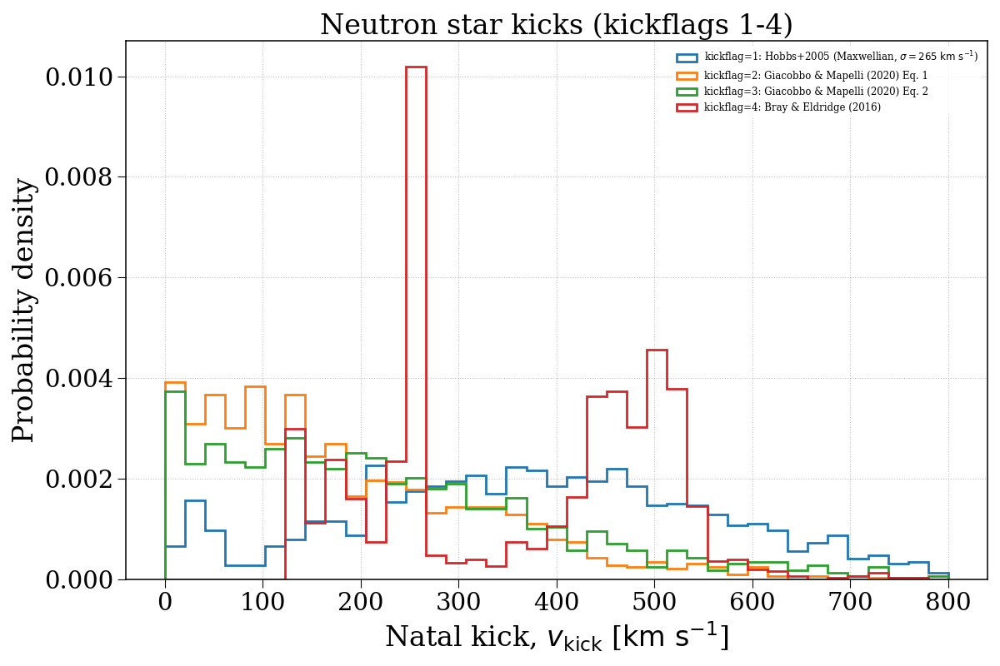
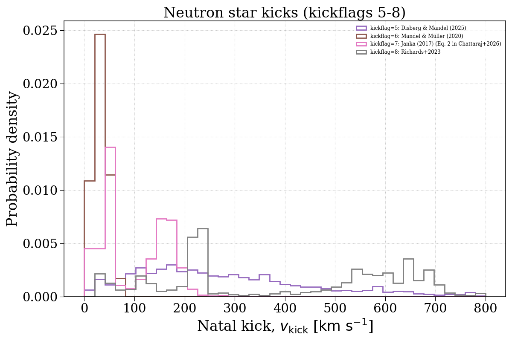
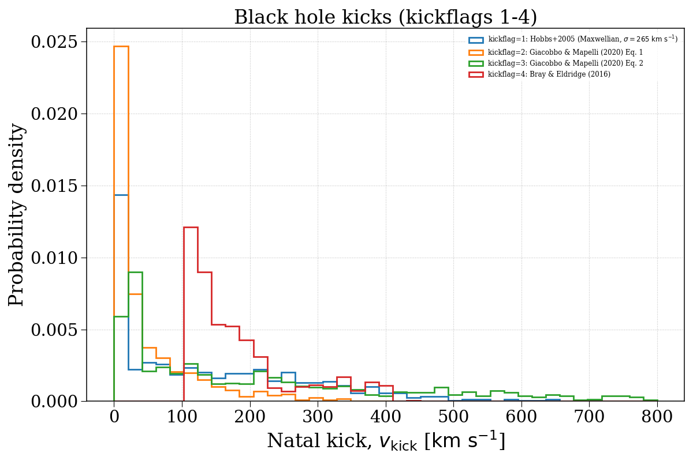
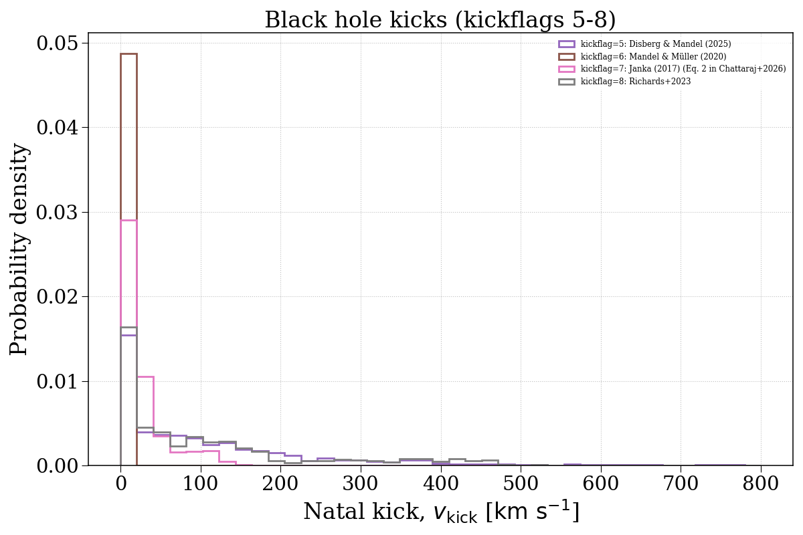

Note
Go to the end to download the full example code.
kickflag¶
This example demonstrates how changing the kickflag parameter can affect the natal kick velocity distributions of compact objects. We separate this into neutron stars and black holes.




Evolving population with kickflag = 1...
Evolving: 0%| | 0/2190 [00:00<?, ?sys/s]
Evolving: 1%| | 25/2190 [00:00<00:09, 233.47sys/s]
Evolving: 2%|▏ | 49/2190 [00:00<00:10, 197.54sys/s]
Evolving: 3%|▎ | 70/2190 [00:00<00:12, 170.21sys/s]
Evolving: 4%|▍ | 88/2190 [00:00<00:16, 131.32sys/s]
Evolving: 5%|▍ | 103/2190 [00:00<00:19, 105.79sys/s]
Evolving: 6%|▌ | 126/2190 [00:00<00:16, 125.27sys/s]
Evolving: 7%|▋ | 144/2190 [00:01<00:19, 104.23sys/s]
Evolving: 8%|▊ | 173/2190 [00:01<00:14, 140.06sys/s]
Evolving: 9%|▊ | 190/2190 [00:01<00:13, 146.46sys/s]
Evolving: 9%|▉ | 207/2190 [00:01<00:17, 113.52sys/s]
Evolving: 10%|█ | 221/2190 [00:01<00:19, 98.99sys/s]
Evolving: 11%|█ | 243/2190 [00:02<00:20, 94.68sys/s]
Evolving: 12%|█▏ | 264/2190 [00:02<00:16, 113.51sys/s]
Evolving: 13%|█▎ | 278/2190 [00:02<00:16, 117.16sys/s]
Evolving: 13%|█▎ | 294/2190 [00:02<00:15, 125.92sys/s]
Evolving: 14%|█▍ | 314/2190 [00:02<00:13, 142.99sys/s]
Evolving: 15%|█▌ | 330/2190 [00:02<00:15, 122.75sys/s]
Evolving: 16%|█▌ | 344/2190 [00:02<00:20, 88.61sys/s]
Evolving: 16%|█▋ | 359/2190 [00:03<00:18, 99.55sys/s]
Evolving: 17%|█▋ | 372/2190 [00:03<00:20, 90.22sys/s]
Evolving: 18%|█▊ | 390/2190 [00:03<00:17, 101.63sys/s]
Evolving: 18%|█▊ | 405/2190 [00:03<00:16, 105.64sys/s]
Evolving: 19%|█▉ | 422/2190 [00:03<00:14, 118.85sys/s]
Evolving: 20%|██ | 438/2190 [00:03<00:13, 126.41sys/s]
Evolving: 21%|██ | 452/2190 [00:03<00:14, 123.96sys/s]
Evolving: 21%|██▏ | 466/2190 [00:04<00:24, 69.37sys/s]
Evolving: 23%|██▎ | 504/2190 [00:04<00:14, 118.54sys/s]
Evolving: 24%|██▍ | 522/2190 [00:04<00:13, 122.30sys/s]
Evolving: 25%|██▍ | 539/2190 [00:04<00:12, 131.66sys/s]
Evolving: 25%|██▌ | 557/2190 [00:04<00:12, 136.08sys/s]
Evolving: 26%|██▌ | 573/2190 [00:04<00:11, 139.24sys/s]
Evolving: 27%|██▋ | 589/2190 [00:04<00:12, 126.95sys/s]
Evolving: 28%|██▊ | 604/2190 [00:05<00:13, 113.58sys/s]
Evolving: 29%|██▊ | 628/2190 [00:05<00:11, 141.52sys/s]
Evolving: 29%|██▉ | 644/2190 [00:05<00:11, 134.02sys/s]
Evolving: 30%|███ | 661/2190 [00:05<00:10, 142.51sys/s]
Evolving: 31%|███ | 677/2190 [00:05<00:14, 104.36sys/s]
Evolving: 32%|███▏ | 702/2190 [00:05<00:11, 130.23sys/s]
Evolving: 33%|███▎ | 719/2190 [00:05<00:11, 132.87sys/s]
Evolving: 34%|███▎ | 737/2190 [00:06<00:10, 140.90sys/s]
Evolving: 34%|███▍ | 753/2190 [00:06<00:12, 114.39sys/s]
Evolving: 36%|███▌ | 778/2190 [00:06<00:09, 142.77sys/s]
Evolving: 36%|███▋ | 795/2190 [00:06<00:09, 146.41sys/s]
Evolving: 37%|███▋ | 812/2190 [00:06<00:09, 149.30sys/s]
Evolving: 38%|███▊ | 829/2190 [00:06<00:09, 148.29sys/s]
Evolving: 39%|███▊ | 845/2190 [00:06<00:10, 124.30sys/s]
Evolving: 40%|███▉ | 872/2190 [00:07<00:08, 155.17sys/s]
Evolving: 41%|████ | 889/2190 [00:07<00:11, 115.49sys/s]
Evolving: 41%|████▏ | 904/2190 [00:07<00:11, 112.37sys/s]
Evolving: 43%|████▎ | 937/2190 [00:07<00:08, 155.84sys/s]
Evolving: 44%|████▎ | 956/2190 [00:07<00:07, 158.85sys/s]
Evolving: 44%|████▍ | 974/2190 [00:07<00:08, 144.63sys/s]
Evolving: 45%|████▌ | 990/2190 [00:08<00:10, 115.51sys/s]
Evolving: 46%|████▌ | 1008/2190 [00:08<00:09, 122.48sys/s]
Evolving: 47%|████▋ | 1022/2190 [00:08<00:10, 109.75sys/s]
Evolving: 48%|████▊ | 1043/2190 [00:08<00:09, 123.51sys/s]
Evolving: 48%|████▊ | 1060/2190 [00:08<00:08, 133.29sys/s]
Evolving: 49%|████▉ | 1078/2190 [00:08<00:07, 142.04sys/s]
Evolving: 50%|████▉ | 1094/2190 [00:08<00:08, 133.83sys/s]
Evolving: 51%|█████ | 1112/2190 [00:08<00:07, 143.15sys/s]
Evolving: 51%|█████▏ | 1127/2190 [00:09<00:07, 135.78sys/s]
Evolving: 52%|█████▏ | 1145/2190 [00:09<00:07, 137.94sys/s]
Evolving: 53%|█████▎ | 1163/2190 [00:09<00:07, 146.46sys/s]
Evolving: 54%|█████▍ | 1178/2190 [00:09<00:08, 117.69sys/s]
Evolving: 55%|█████▌ | 1206/2190 [00:09<00:06, 147.26sys/s]
Evolving: 56%|█████▌ | 1222/2190 [00:09<00:07, 135.41sys/s]
Evolving: 56%|█████▋ | 1237/2190 [00:09<00:08, 117.54sys/s]
Evolving: 57%|█████▋ | 1250/2190 [00:10<00:08, 115.40sys/s]
Evolving: 58%|█████▊ | 1266/2190 [00:10<00:07, 118.60sys/s]
Evolving: 59%|█████▉ | 1287/2190 [00:10<00:06, 136.90sys/s]
Evolving: 59%|█████▉ | 1302/2190 [00:10<00:06, 129.80sys/s]
Evolving: 60%|██████ | 1320/2190 [00:10<00:06, 140.18sys/s]
Evolving: 61%|██████ | 1335/2190 [00:10<00:07, 107.35sys/s]
Evolving: 62%|██████▏ | 1361/2190 [00:10<00:07, 113.14sys/s]
Evolving: 63%|██████▎ | 1389/2190 [00:11<00:05, 144.64sys/s]
Evolving: 64%|██████▍ | 1406/2190 [00:11<00:05, 135.92sys/s]
Evolving: 65%|██████▍ | 1421/2190 [00:11<00:05, 138.43sys/s]
Evolving: 66%|██████▌ | 1436/2190 [00:11<00:06, 108.06sys/s]
Evolving: 67%|██████▋ | 1465/2190 [00:11<00:05, 137.01sys/s]
Evolving: 68%|██████▊ | 1481/2190 [00:11<00:05, 132.46sys/s]
Evolving: 68%|██████▊ | 1496/2190 [00:11<00:06, 113.29sys/s]
Evolving: 69%|██████▉ | 1519/2190 [00:12<00:06, 107.32sys/s]
Evolving: 70%|███████ | 1535/2190 [00:12<00:05, 111.60sys/s]
Evolving: 71%|███████▏ | 1565/2190 [00:12<00:04, 145.75sys/s]
Evolving: 72%|███████▏ | 1584/2190 [00:12<00:03, 154.86sys/s]
Evolving: 73%|███████▎ | 1601/2190 [00:12<00:04, 138.57sys/s]
Evolving: 74%|███████▍ | 1622/2190 [00:12<00:04, 136.43sys/s]
Evolving: 75%|███████▍ | 1639/2190 [00:12<00:03, 143.56sys/s]
Evolving: 76%|███████▌ | 1655/2190 [00:13<00:03, 143.55sys/s]
Evolving: 76%|███████▋ | 1671/2190 [00:13<00:03, 146.93sys/s]
Evolving: 77%|███████▋ | 1687/2190 [00:13<00:03, 141.07sys/s]
Evolving: 78%|███████▊ | 1707/2190 [00:13<00:03, 153.54sys/s]
Evolving: 79%|███████▊ | 1724/2190 [00:13<00:02, 155.57sys/s]
Evolving: 79%|███████▉ | 1741/2190 [00:13<00:02, 157.37sys/s]
Evolving: 80%|████████ | 1757/2190 [00:13<00:03, 113.76sys/s]
Evolving: 82%|████████▏ | 1787/2190 [00:13<00:02, 154.77sys/s]
Evolving: 82%|████████▏ | 1806/2190 [00:14<00:02, 147.70sys/s]
Evolving: 83%|████████▎ | 1823/2190 [00:14<00:02, 146.72sys/s]
Evolving: 84%|████████▍ | 1839/2190 [00:14<00:02, 143.97sys/s]
Evolving: 85%|████████▍ | 1855/2190 [00:14<00:02, 122.91sys/s]
Evolving: 86%|████████▌ | 1875/2190 [00:14<00:02, 140.35sys/s]
Evolving: 86%|████████▋ | 1892/2190 [00:14<00:02, 141.39sys/s]
Evolving: 87%|████████▋ | 1908/2190 [00:14<00:02, 139.40sys/s]
Evolving: 88%|████████▊ | 1923/2190 [00:14<00:01, 141.39sys/s]
Evolving: 89%|████████▊ | 1942/2190 [00:15<00:01, 153.06sys/s]
Evolving: 89%|████████▉ | 1958/2190 [00:15<00:01, 139.52sys/s]
Evolving: 90%|█████████ | 1976/2190 [00:15<00:01, 139.14sys/s]
Evolving: 91%|█████████ | 1996/2190 [00:15<00:01, 148.55sys/s]
Evolving: 92%|█████████▏| 2012/2190 [00:15<00:01, 125.40sys/s]
Evolving: 93%|█████████▎| 2031/2190 [00:15<00:01, 102.00sys/s]
Evolving: 94%|█████████▎| 2051/2190 [00:16<00:01, 96.87sys/s]
Evolving: 95%|█████████▌| 2081/2190 [00:16<00:00, 133.30sys/s]
Evolving: 96%|█████████▌| 2098/2190 [00:16<00:00, 135.27sys/s]
Evolving: 97%|█████████▋| 2114/2190 [00:16<00:00, 120.99sys/s]
Evolving: 98%|█████████▊| 2139/2190 [00:16<00:00, 143.60sys/s]
Evolving: 98%|█████████▊| 2156/2190 [00:16<00:00, 125.84sys/s]
Evolving: 99%|█████████▉| 2179/2190 [00:16<00:00, 145.40sys/s]
Evolving: 100%|██████████| 2190/2190 [00:17<00:00, 128.63sys/s]
[Time taken: 17.3413 seconds]
Evolving population with kickflag = 2...
Evolving: 0%| | 0/2190 [00:00<?, ?sys/s]
Evolving: 0%| | 10/2190 [00:00<00:23, 91.96sys/s]
Evolving: 1%| | 27/2190 [00:00<00:16, 132.51sys/s]
Evolving: 2%|▏ | 41/2190 [00:00<00:16, 130.08sys/s]
Evolving: 3%|▎ | 61/2190 [00:00<00:14, 143.90sys/s]
Evolving: 3%|▎ | 76/2190 [00:00<00:21, 97.31sys/s]
Evolving: 5%|▍ | 101/2190 [00:00<00:19, 107.60sys/s]
Evolving: 6%|▌ | 126/2190 [00:01<00:15, 129.66sys/s]
Evolving: 7%|▋ | 144/2190 [00:01<00:19, 105.12sys/s]
Evolving: 8%|▊ | 175/2190 [00:01<00:13, 144.35sys/s]
Evolving: 9%|▉ | 193/2190 [00:01<00:16, 123.75sys/s]
Evolving: 9%|▉ | 208/2190 [00:01<00:16, 118.33sys/s]
Evolving: 10%|█ | 222/2190 [00:01<00:17, 111.13sys/s]
Evolving: 11%|█ | 240/2190 [00:02<00:16, 121.02sys/s]
Evolving: 12%|█▏ | 254/2190 [00:02<00:19, 97.39sys/s]
Evolving: 13%|█▎ | 276/2190 [00:02<00:17, 110.85sys/s]
Evolving: 14%|█▎ | 300/2190 [00:02<00:13, 135.01sys/s]
Evolving: 14%|█▍ | 316/2190 [00:02<00:17, 106.80sys/s]
Evolving: 15%|█▌ | 334/2190 [00:02<00:18, 102.14sys/s]
Evolving: 16%|█▋ | 359/2190 [00:03<00:14, 124.88sys/s]
Evolving: 17%|█▋ | 377/2190 [00:03<00:16, 106.81sys/s]
Evolving: 19%|█▊ | 408/2190 [00:03<00:12, 140.98sys/s]
Evolving: 19%|█▉ | 426/2190 [00:03<00:11, 147.13sys/s]
Evolving: 20%|██ | 443/2190 [00:03<00:11, 150.94sys/s]
Evolving: 21%|██ | 460/2190 [00:03<00:15, 115.30sys/s]
Evolving: 22%|██▏ | 483/2190 [00:03<00:12, 135.42sys/s]
Evolving: 23%|██▎ | 499/2190 [00:04<00:12, 131.81sys/s]
Evolving: 24%|██▎ | 516/2190 [00:04<00:12, 139.27sys/s]
Evolving: 24%|██▍ | 533/2190 [00:04<00:11, 145.71sys/s]
Evolving: 25%|██▌ | 549/2190 [00:04<00:11, 144.55sys/s]
Evolving: 26%|██▌ | 565/2190 [00:04<00:11, 147.26sys/s]
Evolving: 27%|██▋ | 582/2190 [00:04<00:10, 151.17sys/s]
Evolving: 27%|██▋ | 598/2190 [00:04<00:12, 132.09sys/s]
Evolving: 28%|██▊ | 616/2190 [00:04<00:10, 143.50sys/s]
Evolving: 29%|██▉ | 632/2190 [00:05<00:13, 119.22sys/s]
Evolving: 30%|███ | 657/2190 [00:05<00:10, 149.01sys/s]
Evolving: 31%|███ | 674/2190 [00:05<00:10, 143.17sys/s]
Evolving: 32%|███▏ | 690/2190 [00:05<00:12, 121.76sys/s]
Evolving: 32%|███▏ | 704/2190 [00:05<00:11, 124.10sys/s]
Evolving: 33%|███▎ | 720/2190 [00:05<00:11, 127.84sys/s]
Evolving: 34%|███▎ | 739/2190 [00:05<00:11, 131.84sys/s]
Evolving: 34%|███▍ | 753/2190 [00:06<00:12, 112.69sys/s]
Evolving: 36%|███▌ | 780/2190 [00:06<00:09, 146.39sys/s]
Evolving: 36%|███▋ | 796/2190 [00:06<00:09, 144.42sys/s]
Evolving: 37%|███▋ | 814/2190 [00:06<00:09, 146.03sys/s]
Evolving: 38%|███▊ | 835/2190 [00:06<00:08, 152.89sys/s]
Evolving: 39%|███▉ | 851/2190 [00:06<00:08, 152.51sys/s]
Evolving: 40%|███▉ | 868/2190 [00:06<00:08, 156.47sys/s]
Evolving: 40%|████ | 884/2190 [00:06<00:08, 152.47sys/s]
Evolving: 41%|████ | 900/2190 [00:07<00:10, 122.68sys/s]
Evolving: 42%|████▏ | 914/2190 [00:07<00:10, 121.04sys/s]
Evolving: 43%|████▎ | 937/2190 [00:07<00:08, 142.14sys/s]
Evolving: 44%|████▎ | 956/2190 [00:07<00:08, 145.42sys/s]
Evolving: 44%|████▍ | 972/2190 [00:07<00:09, 132.33sys/s]
Evolving: 45%|████▌ | 986/2190 [00:07<00:11, 105.29sys/s]
Evolving: 46%|████▌ | 1008/2190 [00:07<00:09, 125.49sys/s]
Evolving: 47%|████▋ | 1022/2190 [00:08<00:10, 109.60sys/s]
Evolving: 48%|████▊ | 1043/2190 [00:08<00:09, 119.47sys/s]
Evolving: 49%|████▊ | 1065/2190 [00:08<00:08, 137.06sys/s]
Evolving: 49%|████▉ | 1083/2190 [00:08<00:07, 145.27sys/s]
Evolving: 50%|█████ | 1099/2190 [00:08<00:08, 132.03sys/s]
Evolving: 51%|█████ | 1116/2190 [00:08<00:07, 139.67sys/s]
Evolving: 52%|█████▏ | 1132/2190 [00:08<00:07, 144.17sys/s]
Evolving: 52%|█████▏ | 1147/2190 [00:08<00:07, 137.66sys/s]
Evolving: 53%|█████▎ | 1163/2190 [00:08<00:07, 137.10sys/s]
Evolving: 54%|█████▎ | 1177/2190 [00:09<00:09, 110.69sys/s]
Evolving: 55%|█████▌ | 1206/2190 [00:09<00:07, 139.41sys/s]
Evolving: 56%|█████▌ | 1221/2190 [00:09<00:07, 136.72sys/s]
Evolving: 56%|█████▋ | 1236/2190 [00:09<00:07, 122.50sys/s]
Evolving: 57%|█████▋ | 1249/2190 [00:09<00:09, 99.42sys/s]
Evolving: 58%|█████▊ | 1275/2190 [00:09<00:06, 131.30sys/s]
Evolving: 59%|█████▉ | 1290/2190 [00:10<00:06, 131.33sys/s]
Evolving: 60%|█████▉ | 1305/2190 [00:10<00:07, 126.38sys/s]
Evolving: 60%|██████ | 1321/2190 [00:10<00:07, 119.50sys/s]
Evolving: 61%|██████ | 1338/2190 [00:10<00:06, 130.68sys/s]
Evolving: 62%|██████▏ | 1356/2190 [00:10<00:06, 126.90sys/s]
Evolving: 63%|██████▎ | 1375/2190 [00:10<00:06, 134.64sys/s]
Evolving: 63%|██████▎ | 1389/2190 [00:10<00:06, 132.68sys/s]
Evolving: 64%|██████▍ | 1403/2190 [00:10<00:06, 118.79sys/s]
Evolving: 65%|██████▍ | 1421/2190 [00:11<00:05, 130.84sys/s]
Evolving: 66%|██████▌ | 1435/2190 [00:11<00:07, 103.86sys/s]
Evolving: 67%|██████▋ | 1463/2190 [00:11<00:05, 140.88sys/s]
Evolving: 68%|██████▊ | 1479/2190 [00:11<00:05, 127.03sys/s]
Evolving: 68%|██████▊ | 1495/2190 [00:11<00:05, 133.50sys/s]
Evolving: 69%|██████▉ | 1512/2190 [00:11<00:04, 141.91sys/s]
Evolving: 70%|██████▉ | 1528/2190 [00:11<00:06, 107.86sys/s]
Evolving: 70%|███████ | 1541/2190 [00:12<00:06, 107.75sys/s]
Evolving: 72%|███████▏ | 1566/2190 [00:12<00:04, 137.72sys/s]
Evolving: 72%|███████▏ | 1584/2190 [00:12<00:04, 144.10sys/s]
Evolving: 73%|███████▎ | 1600/2190 [00:12<00:04, 144.46sys/s]
Evolving: 74%|███████▍ | 1616/2190 [00:12<00:03, 147.28sys/s]
Evolving: 75%|███████▍ | 1632/2190 [00:12<00:03, 144.34sys/s]
Evolving: 75%|███████▌ | 1647/2190 [00:12<00:03, 142.09sys/s]
Evolving: 76%|███████▌ | 1664/2190 [00:12<00:03, 144.88sys/s]
Evolving: 77%|███████▋ | 1679/2190 [00:12<00:03, 142.25sys/s]
Evolving: 77%|███████▋ | 1694/2190 [00:13<00:03, 132.69sys/s]
Evolving: 78%|███████▊ | 1713/2190 [00:13<00:03, 147.38sys/s]
Evolving: 79%|███████▉ | 1729/2190 [00:13<00:03, 150.02sys/s]
Evolving: 80%|███████▉ | 1747/2190 [00:13<00:03, 147.42sys/s]
Evolving: 80%|████████ | 1762/2190 [00:13<00:03, 121.14sys/s]
Evolving: 82%|████████▏ | 1787/2190 [00:13<00:02, 150.37sys/s]
Evolving: 82%|████████▏ | 1804/2190 [00:13<00:02, 148.57sys/s]
Evolving: 83%|████████▎ | 1820/2190 [00:13<00:02, 142.69sys/s]
Evolving: 84%|████████▍ | 1839/2190 [00:14<00:02, 141.10sys/s]
Evolving: 85%|████████▍ | 1854/2190 [00:14<00:02, 114.57sys/s]
Evolving: 86%|████████▌ | 1875/2190 [00:14<00:02, 134.92sys/s]
Evolving: 86%|████████▋ | 1894/2190 [00:14<00:02, 145.35sys/s]
Evolving: 87%|████████▋ | 1910/2190 [00:14<00:01, 141.21sys/s]
Evolving: 88%|████████▊ | 1925/2190 [00:14<00:01, 138.86sys/s]
Evolving: 89%|████████▊ | 1941/2190 [00:14<00:01, 140.70sys/s]
Evolving: 89%|████████▉ | 1959/2190 [00:15<00:01, 133.10sys/s]
Evolving: 90%|█████████ | 1980/2190 [00:15<00:01, 145.80sys/s]
Evolving: 91%|█████████ | 1997/2190 [00:15<00:01, 148.57sys/s]
Evolving: 92%|█████████▏| 2013/2190 [00:15<00:01, 115.93sys/s]
Evolving: 93%|█████████▎| 2031/2190 [00:15<00:01, 100.43sys/s]
Evolving: 94%|█████████▎| 2051/2190 [00:15<00:01, 94.97sys/s]
Evolving: 95%|█████████▌| 2082/2190 [00:16<00:00, 131.53sys/s]
Evolving: 96%|█████████▌| 2100/2190 [00:16<00:00, 138.84sys/s]
Evolving: 97%|█████████▋| 2116/2190 [00:16<00:00, 126.41sys/s]
Evolving: 97%|█████████▋| 2135/2190 [00:16<00:00, 140.21sys/s]
Evolving: 98%|█████████▊| 2151/2190 [00:16<00:00, 114.09sys/s]
Evolving: 99%|█████████▉| 2170/2190 [00:16<00:00, 129.10sys/s]
Evolving: 100%|██████████| 2190/2190 [00:16<00:00, 138.19sys/s]
Evolving: 100%|██████████| 2190/2190 [00:16<00:00, 130.01sys/s]
[Time taken: 17.0601 seconds]
Evolving population with kickflag = 3...
Evolving: 0%| | 0/2190 [00:00<?, ?sys/s]
Evolving: 0%| | 10/2190 [00:00<00:24, 87.32sys/s]
Evolving: 1%|▏ | 28/2190 [00:00<00:15, 136.69sys/s]
Evolving: 2%|▏ | 42/2190 [00:00<00:16, 134.03sys/s]
Evolving: 3%|▎ | 58/2190 [00:00<00:15, 137.61sys/s]
Evolving: 3%|▎ | 75/2190 [00:00<00:21, 97.24sys/s]
Evolving: 5%|▍ | 101/2190 [00:00<00:19, 108.54sys/s]
Evolving: 5%|▌ | 113/2190 [00:01<00:19, 108.44sys/s]
Evolving: 6%|▋ | 141/2190 [00:01<00:13, 147.46sys/s]
Evolving: 7%|▋ | 158/2190 [00:01<00:15, 133.68sys/s]
Evolving: 8%|▊ | 175/2190 [00:01<00:15, 131.78sys/s]
Evolving: 9%|▊ | 191/2190 [00:01<00:17, 113.32sys/s]
Evolving: 9%|▉ | 204/2190 [00:01<00:17, 111.32sys/s]
Evolving: 10%|▉ | 218/2190 [00:01<00:19, 100.37sys/s]
Evolving: 11%|█ | 243/2190 [00:02<00:18, 107.25sys/s]
Evolving: 12%|█▏ | 264/2190 [00:02<00:16, 119.87sys/s]
Evolving: 13%|█▎ | 277/2190 [00:02<00:16, 118.44sys/s]
Evolving: 14%|█▎ | 300/2190 [00:02<00:13, 142.93sys/s]
Evolving: 14%|█▍ | 316/2190 [00:02<00:17, 107.33sys/s]
Evolving: 15%|█▌ | 334/2190 [00:02<00:18, 102.35sys/s]
Evolving: 16%|█▋ | 359/2190 [00:03<00:14, 128.43sys/s]
Evolving: 17%|█▋ | 377/2190 [00:03<00:16, 109.62sys/s]
Evolving: 18%|█▊ | 405/2190 [00:03<00:12, 141.78sys/s]
Evolving: 19%|█▉ | 423/2190 [00:03<00:11, 148.22sys/s]
Evolving: 20%|██ | 441/2190 [00:03<00:12, 141.44sys/s]
Evolving: 21%|██ | 457/2190 [00:03<00:15, 112.71sys/s]
Evolving: 22%|██▏ | 471/2190 [00:03<00:14, 117.58sys/s]
Evolving: 23%|██▎ | 494/2190 [00:04<00:12, 132.15sys/s]
Evolving: 23%|██▎ | 514/2190 [00:04<00:11, 144.40sys/s]
Evolving: 24%|██▍ | 531/2190 [00:04<00:11, 147.58sys/s]
Evolving: 25%|██▌ | 549/2190 [00:04<00:10, 149.90sys/s]
Evolving: 26%|██▌ | 568/2190 [00:04<00:11, 143.57sys/s]
Evolving: 27%|██▋ | 583/2190 [00:04<00:11, 142.68sys/s]
Evolving: 27%|██▋ | 598/2190 [00:04<00:11, 138.74sys/s]
Evolving: 28%|██▊ | 613/2190 [00:04<00:11, 140.11sys/s]
Evolving: 29%|██▊ | 629/2190 [00:04<00:11, 134.12sys/s]
Evolving: 30%|██▉ | 648/2190 [00:05<00:11, 138.58sys/s]
Evolving: 30%|███ | 666/2190 [00:05<00:10, 145.90sys/s]
Evolving: 31%|███ | 681/2190 [00:05<00:13, 114.01sys/s]
Evolving: 32%|███▏ | 702/2190 [00:05<00:11, 130.77sys/s]
Evolving: 33%|███▎ | 717/2190 [00:05<00:10, 134.90sys/s]
Evolving: 33%|███▎ | 733/2190 [00:05<00:10, 140.33sys/s]
Evolving: 34%|███▍ | 748/2190 [00:06<00:14, 101.80sys/s]
Evolving: 36%|███▌ | 780/2190 [00:06<00:09, 144.40sys/s]
Evolving: 36%|███▋ | 799/2190 [00:06<00:09, 146.65sys/s]
Evolving: 37%|███▋ | 817/2190 [00:06<00:09, 151.66sys/s]
Evolving: 38%|███▊ | 835/2190 [00:06<00:08, 155.99sys/s]
Evolving: 39%|███▉ | 852/2190 [00:06<00:09, 148.47sys/s]
Evolving: 40%|███▉ | 870/2190 [00:06<00:08, 155.34sys/s]
Evolving: 41%|████ | 887/2190 [00:06<00:08, 151.42sys/s]
Evolving: 41%|████ | 903/2190 [00:07<00:10, 122.59sys/s]
Evolving: 42%|████▏ | 918/2190 [00:07<00:09, 127.48sys/s]
Evolving: 43%|████▎ | 937/2190 [00:07<00:08, 140.42sys/s]
Evolving: 44%|████▎ | 953/2190 [00:07<00:08, 142.54sys/s]
Evolving: 44%|████▍ | 968/2190 [00:07<00:10, 118.77sys/s]
Evolving: 45%|████▍ | 981/2190 [00:07<00:10, 112.37sys/s]
Evolving: 45%|████▌ | 993/2190 [00:07<00:11, 108.74sys/s]
Evolving: 46%|████▌ | 1012/2190 [00:08<00:12, 95.79sys/s]
Evolving: 48%|████▊ | 1043/2190 [00:08<00:08, 131.91sys/s]
Evolving: 49%|████▊ | 1066/2190 [00:08<00:07, 146.86sys/s]
Evolving: 49%|████▉ | 1083/2190 [00:08<00:07, 142.99sys/s]
Evolving: 50%|█████ | 1099/2190 [00:08<00:07, 145.88sys/s]
Evolving: 51%|█████ | 1117/2190 [00:08<00:07, 148.21sys/s]
Evolving: 52%|█████▏ | 1133/2190 [00:08<00:08, 129.96sys/s]
Evolving: 53%|█████▎ | 1153/2190 [00:08<00:07, 144.82sys/s]
Evolving: 53%|█████▎ | 1169/2190 [00:08<00:06, 147.68sys/s]
Evolving: 54%|█████▍ | 1185/2190 [00:09<00:07, 134.47sys/s]
Evolving: 55%|█████▌ | 1206/2190 [00:09<00:06, 152.58sys/s]
Evolving: 56%|█████▌ | 1222/2190 [00:09<00:07, 135.85sys/s]
Evolving: 56%|█████▋ | 1237/2190 [00:09<00:08, 114.84sys/s]
Evolving: 57%|█████▋ | 1254/2190 [00:09<00:07, 119.48sys/s]
Evolving: 58%|█████▊ | 1267/2190 [00:09<00:07, 119.46sys/s]
Evolving: 59%|█████▊ | 1285/2190 [00:09<00:06, 132.03sys/s]
Evolving: 59%|█████▉ | 1299/2190 [00:10<00:07, 122.17sys/s]
Evolving: 60%|██████ | 1319/2190 [00:10<00:06, 139.55sys/s]
Evolving: 61%|██████ | 1334/2190 [00:10<00:06, 124.44sys/s]
Evolving: 62%|██████▏ | 1351/2190 [00:10<00:06, 133.34sys/s]
Evolving: 62%|██████▏ | 1365/2190 [00:10<00:07, 114.26sys/s]
Evolving: 63%|██████▎ | 1389/2190 [00:10<00:05, 141.00sys/s]
Evolving: 64%|██████▍ | 1405/2190 [00:10<00:06, 125.26sys/s]
Evolving: 65%|██████▍ | 1421/2190 [00:10<00:05, 132.06sys/s]
Evolving: 66%|██████▌ | 1436/2190 [00:11<00:06, 108.69sys/s]
Evolving: 67%|██████▋ | 1462/2190 [00:11<00:05, 142.00sys/s]
Evolving: 68%|██████▊ | 1479/2190 [00:11<00:05, 128.18sys/s]
Evolving: 68%|██████▊ | 1496/2190 [00:11<00:06, 115.38sys/s]
Evolving: 69%|██████▉ | 1519/2190 [00:11<00:06, 109.77sys/s]
Evolving: 70%|███████ | 1535/2190 [00:11<00:05, 114.03sys/s]
Evolving: 71%|███████▏ | 1564/2190 [00:12<00:04, 146.81sys/s]
Evolving: 72%|███████▏ | 1581/2190 [00:12<00:04, 151.66sys/s]
Evolving: 73%|███████▎ | 1598/2190 [00:12<00:03, 152.78sys/s]
Evolving: 74%|███████▎ | 1615/2190 [00:12<00:03, 145.02sys/s]
Evolving: 74%|███████▍ | 1631/2190 [00:12<00:03, 141.00sys/s]
Evolving: 75%|███████▌ | 1646/2190 [00:12<00:03, 141.84sys/s]
Evolving: 76%|███████▌ | 1664/2190 [00:12<00:03, 150.34sys/s]
Evolving: 77%|███████▋ | 1680/2190 [00:12<00:03, 150.49sys/s]
Evolving: 77%|███████▋ | 1696/2190 [00:12<00:03, 146.63sys/s]
Evolving: 78%|███████▊ | 1713/2190 [00:13<00:03, 152.67sys/s]
Evolving: 79%|███████▉ | 1729/2190 [00:13<00:03, 145.68sys/s]
Evolving: 80%|███████▉ | 1744/2190 [00:13<00:03, 141.81sys/s]
Evolving: 80%|████████ | 1759/2190 [00:13<00:03, 112.24sys/s]
Evolving: 82%|████████▏ | 1785/2190 [00:13<00:02, 141.14sys/s]
Evolving: 82%|████████▏ | 1803/2190 [00:13<00:02, 150.39sys/s]
Evolving: 83%|████████▎ | 1820/2190 [00:13<00:02, 150.04sys/s]
Evolving: 84%|████████▍ | 1836/2190 [00:13<00:02, 148.38sys/s]
Evolving: 85%|████████▍ | 1852/2190 [00:14<00:02, 118.07sys/s]
Evolving: 86%|████████▌ | 1875/2190 [00:14<00:02, 142.42sys/s]
Evolving: 86%|████████▋ | 1891/2190 [00:14<00:02, 142.53sys/s]
Evolving: 87%|████████▋ | 1907/2190 [00:14<00:02, 134.67sys/s]
Evolving: 88%|████████▊ | 1922/2190 [00:14<00:01, 138.14sys/s]
Evolving: 89%|████████▊ | 1942/2190 [00:14<00:01, 152.36sys/s]
Evolving: 89%|████████▉ | 1958/2190 [00:14<00:01, 151.53sys/s]
Evolving: 90%|█████████ | 1974/2190 [00:14<00:01, 147.80sys/s]
Evolving: 91%|█████████ | 1991/2190 [00:15<00:01, 153.04sys/s]
Evolving: 92%|█████████▏| 2007/2190 [00:15<00:01, 113.47sys/s]
Evolving: 93%|█████████▎| 2031/2190 [00:15<00:01, 89.16sys/s]
Evolving: 94%|█████████▎| 2051/2190 [00:15<00:01, 100.09sys/s]
Evolving: 95%|█████████▌| 2088/2190 [00:15<00:00, 143.06sys/s]
Evolving: 96%|█████████▌| 2106/2190 [00:16<00:00, 115.61sys/s]
Evolving: 98%|█████████▊| 2136/2190 [00:16<00:00, 144.65sys/s]
Evolving: 98%|█████████▊| 2154/2190 [00:16<00:00, 130.11sys/s]
Evolving: 99%|█████████▉| 2175/2190 [00:16<00:00, 140.85sys/s]
Evolving: 100%|██████████| 2190/2190 [00:16<00:00, 131.28sys/s]
[Time taken: 16.9028 seconds]
Evolving population with kickflag = 4...
Evolving: 0%| | 0/2190 [00:00<?, ?sys/s]
Evolving: 1%| | 11/2190 [00:00<00:25, 86.02sys/s]
Evolving: 1%|▏ | 29/2190 [00:00<00:17, 125.71sys/s]
Evolving: 2%|▏ | 49/2190 [00:00<00:14, 152.41sys/s]
Evolving: 3%|▎ | 66/2190 [00:00<00:13, 154.05sys/s]
Evolving: 4%|▎ | 82/2190 [00:00<00:19, 106.58sys/s]
Evolving: 5%|▍ | 101/2190 [00:00<00:20, 104.03sys/s]
Evolving: 5%|▌ | 113/2190 [00:01<00:20, 101.33sys/s]
Evolving: 6%|▋ | 141/2190 [00:01<00:14, 139.06sys/s]
Evolving: 7%|▋ | 157/2190 [00:01<00:15, 131.36sys/s]
Evolving: 8%|▊ | 175/2190 [00:01<00:14, 138.50sys/s]
Evolving: 9%|▊ | 191/2190 [00:01<00:17, 115.98sys/s]
Evolving: 9%|▉ | 204/2190 [00:01<00:18, 108.01sys/s]
Evolving: 10%|▉ | 218/2190 [00:01<00:18, 104.20sys/s]
Evolving: 11%|█ | 240/2190 [00:02<00:16, 117.31sys/s]
Evolving: 12%|█▏ | 253/2190 [00:02<00:19, 100.54sys/s]
Evolving: 13%|█▎ | 276/2190 [00:02<00:16, 116.57sys/s]
Evolving: 14%|█▎ | 296/2190 [00:02<00:14, 134.29sys/s]
Evolving: 14%|█▍ | 315/2190 [00:02<00:13, 140.78sys/s]
Evolving: 15%|█▌ | 330/2190 [00:02<00:14, 129.31sys/s]
Evolving: 16%|█▌ | 344/2190 [00:02<00:17, 106.15sys/s]
Evolving: 16%|█▋ | 359/2190 [00:03<00:16, 109.47sys/s]
Evolving: 17%|█▋ | 377/2190 [00:03<00:18, 99.91sys/s]
Evolving: 18%|█▊ | 402/2190 [00:03<00:13, 129.49sys/s]
Evolving: 19%|█▉ | 423/2190 [00:03<00:12, 147.05sys/s]
Evolving: 20%|██ | 441/2190 [00:03<00:11, 150.20sys/s]
Evolving: 21%|██ | 458/2190 [00:03<00:17, 101.10sys/s]
Evolving: 22%|██▏ | 488/2190 [00:03<00:12, 137.25sys/s]
Evolving: 23%|██▎ | 506/2190 [00:04<00:12, 133.81sys/s]
Evolving: 24%|██▍ | 523/2190 [00:04<00:11, 140.12sys/s]
Evolving: 25%|██▍ | 540/2190 [00:04<00:11, 145.69sys/s]
Evolving: 25%|██▌ | 557/2190 [00:04<00:11, 146.35sys/s]
Evolving: 26%|██▌ | 573/2190 [00:04<00:11, 135.64sys/s]
Evolving: 27%|██▋ | 591/2190 [00:04<00:11, 140.05sys/s]
Evolving: 28%|██▊ | 606/2190 [00:04<00:13, 120.50sys/s]
Evolving: 29%|██▊ | 628/2190 [00:04<00:10, 142.90sys/s]
Evolving: 29%|██▉ | 644/2190 [00:05<00:11, 132.32sys/s]
Evolving: 30%|███ | 662/2190 [00:05<00:10, 141.49sys/s]
Evolving: 31%|███ | 677/2190 [00:05<00:13, 115.47sys/s]
Evolving: 32%|███▏ | 696/2190 [00:05<00:11, 131.42sys/s]
Evolving: 32%|███▏ | 711/2190 [00:05<00:11, 133.02sys/s]
Evolving: 33%|███▎ | 726/2190 [00:05<00:10, 136.29sys/s]
Evolving: 34%|███▍ | 744/2190 [00:06<00:14, 96.55sys/s]
Evolving: 36%|███▌ | 782/2190 [00:06<00:09, 151.42sys/s]
Evolving: 37%|███▋ | 802/2190 [00:06<00:09, 145.20sys/s]
Evolving: 37%|███▋ | 820/2190 [00:06<00:09, 146.42sys/s]
Evolving: 38%|███▊ | 837/2190 [00:06<00:08, 151.50sys/s]
Evolving: 39%|███▉ | 854/2190 [00:06<00:08, 151.21sys/s]
Evolving: 40%|███▉ | 871/2190 [00:06<00:08, 149.46sys/s]
Evolving: 41%|████ | 887/2190 [00:06<00:08, 151.27sys/s]
Evolving: 41%|████ | 903/2190 [00:07<00:09, 129.15sys/s]
Evolving: 42%|████▏ | 917/2190 [00:07<00:10, 126.26sys/s]
Evolving: 43%|████▎ | 931/2190 [00:07<00:10, 122.06sys/s]
Evolving: 44%|████▎ | 954/2190 [00:07<00:08, 145.12sys/s]
Evolving: 44%|████▍ | 970/2190 [00:07<00:09, 130.47sys/s]
Evolving: 45%|████▍ | 984/2190 [00:07<00:11, 107.53sys/s]
Evolving: 46%|████▌ | 998/2190 [00:07<00:10, 113.20sys/s]
Evolving: 46%|████▌ | 1012/2190 [00:08<00:12, 93.58sys/s]
Evolving: 47%|████▋ | 1037/2190 [00:08<00:09, 121.00sys/s]
Evolving: 48%|████▊ | 1051/2190 [00:08<00:09, 119.43sys/s]
Evolving: 49%|████▊ | 1066/2190 [00:08<00:09, 121.46sys/s]
Evolving: 49%|████▉ | 1079/2190 [00:08<00:09, 123.39sys/s]
Evolving: 50%|████▉ | 1092/2190 [00:08<00:10, 108.26sys/s]
Evolving: 50%|█████ | 1104/2190 [00:08<00:10, 105.69sys/s]
Evolving: 51%|█████ | 1122/2190 [00:08<00:09, 113.73sys/s]
Evolving: 52%|█████▏ | 1134/2190 [00:09<00:09, 108.05sys/s]
Evolving: 53%|█████▎ | 1154/2190 [00:09<00:08, 119.58sys/s]
Evolving: 53%|█████▎ | 1168/2190 [00:09<00:09, 110.31sys/s]
Evolving: 54%|█████▍ | 1180/2190 [00:09<00:09, 108.38sys/s]
Evolving: 55%|█████▍ | 1201/2190 [00:09<00:08, 123.19sys/s]
Evolving: 56%|█████▌ | 1217/2190 [00:09<00:07, 122.74sys/s]
Evolving: 56%|█████▌ | 1230/2190 [00:09<00:08, 111.27sys/s]
Evolving: 57%|█████▋ | 1242/2190 [00:10<00:08, 107.71sys/s]
Evolving: 57%|█████▋ | 1253/2190 [00:10<00:09, 100.97sys/s]
Evolving: 58%|█████▊ | 1266/2190 [00:10<00:09, 99.37sys/s]
Evolving: 59%|█████▊ | 1285/2190 [00:10<00:07, 117.28sys/s]
Evolving: 59%|█████▉ | 1298/2190 [00:10<00:07, 120.48sys/s]
Evolving: 60%|██████ | 1315/2190 [00:10<00:06, 131.84sys/s]
Evolving: 61%|██████ | 1329/2190 [00:10<00:07, 108.91sys/s]
Evolving: 62%|██████▏ | 1353/2190 [00:10<00:06, 137.05sys/s]
Evolving: 62%|██████▏ | 1368/2190 [00:11<00:06, 121.31sys/s]
Evolving: 63%|██████▎ | 1388/2190 [00:11<00:05, 135.26sys/s]
Evolving: 64%|██████▍ | 1403/2190 [00:11<00:06, 123.12sys/s]
Evolving: 65%|██████▌ | 1424/2190 [00:11<00:05, 135.71sys/s]
Evolving: 66%|██████▌ | 1439/2190 [00:11<00:06, 115.37sys/s]
Evolving: 67%|██████▋ | 1460/2190 [00:11<00:05, 136.20sys/s]
Evolving: 67%|██████▋ | 1477/2190 [00:11<00:05, 122.48sys/s]
Evolving: 68%|██████▊ | 1496/2190 [00:12<00:06, 111.92sys/s]
Evolving: 69%|██████▉ | 1519/2190 [00:12<00:06, 106.73sys/s]
Evolving: 70%|███████ | 1535/2190 [00:12<00:05, 111.52sys/s]
Evolving: 72%|███████▏ | 1566/2190 [00:12<00:04, 150.77sys/s]
Evolving: 72%|███████▏ | 1584/2190 [00:12<00:03, 155.74sys/s]
Evolving: 73%|███████▎ | 1602/2190 [00:12<00:04, 143.21sys/s]
Evolving: 74%|███████▍ | 1621/2190 [00:12<00:03, 152.38sys/s]
Evolving: 75%|███████▍ | 1638/2190 [00:13<00:04, 137.09sys/s]
Evolving: 76%|███████▌ | 1656/2190 [00:13<00:03, 146.21sys/s]
Evolving: 76%|███████▋ | 1672/2190 [00:13<00:03, 141.82sys/s]
Evolving: 77%|███████▋ | 1690/2190 [00:13<00:03, 150.31sys/s]
Evolving: 78%|███████▊ | 1706/2190 [00:13<00:03, 149.30sys/s]
Evolving: 79%|███████▊ | 1722/2190 [00:13<00:03, 145.21sys/s]
Evolving: 79%|███████▉ | 1740/2190 [00:13<00:02, 153.94sys/s]
Evolving: 80%|████████ | 1756/2190 [00:13<00:03, 113.43sys/s]
Evolving: 82%|████████▏ | 1787/2190 [00:14<00:02, 149.37sys/s]
Evolving: 82%|████████▏ | 1804/2190 [00:14<00:02, 145.70sys/s]
Evolving: 83%|████████▎ | 1820/2190 [00:14<00:02, 143.51sys/s]
Evolving: 84%|████████▍ | 1837/2190 [00:14<00:02, 148.00sys/s]
Evolving: 85%|████████▍ | 1853/2190 [00:14<00:02, 117.41sys/s]
Evolving: 86%|████████▌ | 1878/2190 [00:14<00:02, 146.00sys/s]
Evolving: 87%|████████▋ | 1895/2190 [00:14<00:01, 148.20sys/s]
Evolving: 87%|████████▋ | 1912/2190 [00:15<00:01, 147.26sys/s]
Evolving: 88%|████████▊ | 1928/2190 [00:15<00:01, 145.81sys/s]
Evolving: 89%|████████▉ | 1945/2190 [00:15<00:01, 135.94sys/s]
Evolving: 90%|████████▉ | 1962/2190 [00:15<00:01, 134.86sys/s]
Evolving: 91%|█████████ | 1983/2190 [00:15<00:01, 151.77sys/s]
Evolving: 91%|█████████▏| 2000/2190 [00:15<00:01, 104.13sys/s]
Evolving: 93%|█████████▎| 2031/2190 [00:16<00:01, 110.69sys/s]
Evolving: 94%|█████████▎| 2051/2190 [00:16<00:01, 106.33sys/s]
Evolving: 95%|█████████▌| 2083/2190 [00:16<00:00, 138.14sys/s]
Evolving: 96%|█████████▌| 2099/2190 [00:16<00:00, 139.38sys/s]
Evolving: 97%|█████████▋| 2115/2190 [00:16<00:00, 132.74sys/s]
Evolving: 97%|█████████▋| 2131/2190 [00:16<00:00, 138.42sys/s]
Evolving: 98%|█████████▊| 2146/2190 [00:17<00:00, 80.93sys/s]
Evolving: 99%|█████████▉| 2174/2190 [00:17<00:00, 112.92sys/s]
Evolving: 100%|██████████| 2190/2190 [00:17<00:00, 126.19sys/s]
[Time taken: 17.5751 seconds]
Evolving population with kickflag = 5...
Evolving: 0%| | 0/2190 [00:00<?, ?sys/s]
Evolving: 0%| | 9/2190 [00:00<00:25, 84.35sys/s]
Evolving: 1%| | 25/2190 [00:00<00:17, 125.41sys/s]
Evolving: 2%|▏ | 42/2190 [00:00<00:15, 142.38sys/s]
Evolving: 3%|▎ | 59/2190 [00:00<00:14, 149.04sys/s]
Evolving: 3%|▎ | 74/2190 [00:00<00:14, 145.38sys/s]
Evolving: 4%|▍ | 89/2190 [00:00<00:17, 121.79sys/s]
Evolving: 5%|▍ | 102/2190 [00:00<00:21, 95.37sys/s]
Evolving: 6%|▌ | 126/2190 [00:01<00:17, 118.15sys/s]
Evolving: 7%|▋ | 144/2190 [00:01<00:21, 97.33sys/s]
Evolving: 8%|▊ | 175/2190 [00:01<00:14, 137.37sys/s]
Evolving: 9%|▉ | 192/2190 [00:01<00:16, 122.79sys/s]
Evolving: 9%|▉ | 207/2190 [00:01<00:17, 115.71sys/s]
Evolving: 10%|█ | 220/2190 [00:01<00:18, 106.36sys/s]
Evolving: 11%|█ | 240/2190 [00:02<00:15, 123.96sys/s]
Evolving: 12%|█▏ | 254/2190 [00:02<00:19, 101.66sys/s]
Evolving: 13%|█▎ | 275/2190 [00:02<00:15, 121.87sys/s]
Evolving: 13%|█▎ | 290/2190 [00:02<00:15, 124.02sys/s]
Evolving: 14%|█▍ | 309/2190 [00:02<00:13, 138.05sys/s]
Evolving: 15%|█▍ | 324/2190 [00:02<00:17, 108.18sys/s]
Evolving: 15%|█▌ | 337/2190 [00:02<00:18, 97.71sys/s]
Evolving: 16%|█▋ | 359/2190 [00:03<00:15, 117.19sys/s]
Evolving: 17%|█▋ | 377/2190 [00:03<00:18, 97.95sys/s]
Evolving: 19%|█▉ | 411/2190 [00:03<00:12, 143.56sys/s]
Evolving: 20%|█▉ | 429/2190 [00:03<00:12, 145.61sys/s]
Evolving: 20%|██ | 447/2190 [00:03<00:11, 147.74sys/s]
Evolving: 21%|██ | 464/2190 [00:03<00:17, 99.51sys/s]
Evolving: 23%|██▎ | 494/2190 [00:04<00:13, 129.31sys/s]
Evolving: 23%|██▎ | 514/2190 [00:04<00:12, 138.59sys/s]
Evolving: 24%|██▍ | 532/2190 [00:04<00:11, 145.60sys/s]
Evolving: 25%|██▌ | 549/2190 [00:04<00:11, 147.50sys/s]
Evolving: 26%|██▌ | 566/2190 [00:04<00:10, 149.34sys/s]
Evolving: 27%|██▋ | 583/2190 [00:04<00:12, 127.61sys/s]
Evolving: 27%|██▋ | 602/2190 [00:04<00:13, 117.19sys/s]
Evolving: 29%|██▊ | 629/2190 [00:05<00:10, 145.20sys/s]
Evolving: 29%|██▉ | 646/2190 [00:05<00:10, 149.43sys/s]
Evolving: 30%|███ | 663/2190 [00:05<00:10, 143.00sys/s]
Evolving: 31%|███ | 679/2190 [00:05<00:13, 115.55sys/s]
Evolving: 32%|███▏ | 698/2190 [00:05<00:11, 128.79sys/s]
Evolving: 33%|███▎ | 716/2190 [00:05<00:10, 135.01sys/s]
Evolving: 34%|███▎ | 734/2190 [00:05<00:10, 135.11sys/s]
Evolving: 34%|███▍ | 749/2190 [00:06<00:13, 108.54sys/s]
Evolving: 36%|███▌ | 780/2190 [00:06<00:09, 143.17sys/s]
Evolving: 37%|███▋ | 800/2190 [00:06<00:09, 153.46sys/s]
Evolving: 37%|███▋ | 817/2190 [00:06<00:09, 151.72sys/s]
Evolving: 38%|███▊ | 834/2190 [00:06<00:08, 151.63sys/s]
Evolving: 39%|███▉ | 850/2190 [00:06<00:09, 145.93sys/s]
Evolving: 40%|███▉ | 869/2190 [00:06<00:08, 152.95sys/s]
Evolving: 40%|████ | 885/2190 [00:06<00:08, 149.30sys/s]
Evolving: 41%|████ | 901/2190 [00:07<00:10, 125.43sys/s]
Evolving: 42%|████▏ | 915/2190 [00:07<00:10, 125.32sys/s]
Evolving: 43%|████▎ | 935/2190 [00:07<00:08, 140.77sys/s]
Evolving: 44%|████▎ | 954/2190 [00:07<00:08, 149.24sys/s]
Evolving: 44%|████▍ | 970/2190 [00:07<00:09, 126.94sys/s]
Evolving: 45%|████▍ | 984/2190 [00:07<00:11, 105.21sys/s]
Evolving: 46%|████▌ | 1002/2190 [00:07<00:09, 119.79sys/s]
Evolving: 46%|████▋ | 1016/2190 [00:08<00:11, 97.94sys/s]
Evolving: 48%|████▊ | 1043/2190 [00:08<00:08, 127.46sys/s]
Evolving: 49%|████▊ | 1063/2190 [00:08<00:07, 142.15sys/s]
Evolving: 49%|████▉ | 1080/2190 [00:08<00:07, 141.68sys/s]
Evolving: 50%|█████ | 1096/2190 [00:08<00:07, 143.36sys/s]
Evolving: 51%|█████ | 1112/2190 [00:08<00:07, 140.44sys/s]
Evolving: 51%|█████▏ | 1127/2190 [00:08<00:07, 136.57sys/s]
Evolving: 52%|█████▏ | 1144/2190 [00:08<00:07, 140.87sys/s]
Evolving: 53%|█████▎ | 1159/2190 [00:08<00:07, 141.32sys/s]
Evolving: 54%|█████▎ | 1176/2190 [00:09<00:06, 145.65sys/s]
Evolving: 54%|█████▍ | 1191/2190 [00:09<00:07, 141.40sys/s]
Evolving: 55%|█████▌ | 1207/2190 [00:09<00:06, 145.72sys/s]
Evolving: 56%|█████▌ | 1222/2190 [00:09<00:07, 131.76sys/s]
Evolving: 56%|█████▋ | 1236/2190 [00:09<00:08, 109.59sys/s]
Evolving: 57%|█████▋ | 1248/2190 [00:09<00:08, 109.47sys/s]
Evolving: 58%|█████▊ | 1261/2190 [00:09<00:08, 114.27sys/s]
Evolving: 58%|█████▊ | 1279/2190 [00:09<00:07, 128.68sys/s]
Evolving: 59%|█████▉ | 1293/2190 [00:10<00:06, 130.72sys/s]
Evolving: 60%|█████▉ | 1309/2190 [00:10<00:06, 133.28sys/s]
Evolving: 60%|██████ | 1323/2190 [00:10<00:07, 121.76sys/s]
Evolving: 61%|██████ | 1338/2190 [00:10<00:06, 124.81sys/s]
Evolving: 62%|██████▏ | 1356/2190 [00:10<00:06, 138.62sys/s]
Evolving: 63%|██████▎ | 1371/2190 [00:10<00:06, 129.51sys/s]
Evolving: 63%|██████▎ | 1386/2190 [00:10<00:06, 131.41sys/s]
Evolving: 64%|██████▍ | 1400/2190 [00:10<00:06, 116.76sys/s]
Evolving: 65%|██████▍ | 1421/2190 [00:11<00:05, 138.06sys/s]
Evolving: 66%|██████▌ | 1436/2190 [00:11<00:07, 105.62sys/s]
Evolving: 67%|██████▋ | 1462/2190 [00:11<00:05, 138.47sys/s]
Evolving: 68%|██████▊ | 1479/2190 [00:11<00:05, 127.01sys/s]
Evolving: 68%|██████▊ | 1495/2190 [00:11<00:05, 131.81sys/s]
Evolving: 69%|██████▉ | 1513/2190 [00:11<00:04, 141.66sys/s]
Evolving: 70%|██████▉ | 1529/2190 [00:11<00:05, 116.73sys/s]
Evolving: 70%|███████ | 1543/2190 [00:12<00:05, 109.21sys/s]
Evolving: 72%|███████▏ | 1569/2190 [00:12<00:04, 137.79sys/s]
Evolving: 72%|███████▏ | 1585/2190 [00:12<00:04, 137.40sys/s]
Evolving: 73%|███████▎ | 1601/2190 [00:12<00:04, 133.73sys/s]
Evolving: 74%|███████▍ | 1621/2190 [00:12<00:03, 146.43sys/s]
Evolving: 75%|███████▍ | 1637/2190 [00:12<00:03, 141.24sys/s]
Evolving: 76%|███████▌ | 1656/2190 [00:12<00:03, 146.95sys/s]
Evolving: 76%|███████▋ | 1673/2190 [00:12<00:03, 143.48sys/s]
Evolving: 77%|███████▋ | 1691/2190 [00:13<00:03, 150.72sys/s]
Evolving: 78%|███████▊ | 1707/2190 [00:13<00:03, 146.17sys/s]
Evolving: 79%|███████▊ | 1724/2190 [00:13<00:03, 150.92sys/s]
Evolving: 79%|███████▉ | 1740/2190 [00:13<00:03, 145.83sys/s]
Evolving: 80%|████████ | 1755/2190 [00:13<00:04, 107.61sys/s]
Evolving: 82%|████████▏ | 1789/2190 [00:13<00:02, 156.50sys/s]
Evolving: 83%|████████▎ | 1808/2190 [00:13<00:02, 151.08sys/s]
Evolving: 83%|████████▎ | 1825/2190 [00:13<00:02, 154.08sys/s]
Evolving: 84%|████████▍ | 1842/2190 [00:14<00:02, 155.11sys/s]
Evolving: 85%|████████▍ | 1859/2190 [00:14<00:02, 133.23sys/s]
Evolving: 86%|████████▌ | 1874/2190 [00:14<00:02, 132.86sys/s]
Evolving: 86%|████████▋ | 1891/2190 [00:14<00:02, 126.98sys/s]
Evolving: 87%|████████▋ | 1907/2190 [00:14<00:02, 132.36sys/s]
Evolving: 88%|████████▊ | 1927/2190 [00:14<00:01, 145.37sys/s]
Evolving: 89%|████████▉ | 1946/2190 [00:14<00:01, 155.73sys/s]
Evolving: 90%|████████▉ | 1963/2190 [00:14<00:01, 140.00sys/s]
Evolving: 91%|█████████ | 1984/2190 [00:15<00:01, 147.25sys/s]
Evolving: 91%|█████████▏| 2000/2190 [00:15<00:01, 114.49sys/s]
Evolving: 92%|█████████▏| 2024/2190 [00:15<00:01, 140.49sys/s]
Evolving: 93%|█████████▎| 2040/2190 [00:15<00:01, 110.28sys/s]
Evolving: 94%|█████████▍| 2054/2190 [00:15<00:01, 95.91sys/s]
Evolving: 95%|█████████▌| 2087/2190 [00:15<00:00, 139.91sys/s]
Evolving: 96%|█████████▌| 2105/2190 [00:16<00:00, 111.28sys/s]
Evolving: 97%|█████████▋| 2135/2190 [00:16<00:00, 140.32sys/s]
Evolving: 98%|█████████▊| 2153/2190 [00:16<00:00, 127.01sys/s]
Evolving: 99%|█████████▉| 2176/2190 [00:16<00:00, 144.78sys/s]
Evolving: 100%|██████████| 2190/2190 [00:16<00:00, 130.70sys/s]
[Time taken: 16.9721 seconds]
Evolving population with kickflag = 6...
Evolving: 0%| | 0/2190 [00:00<?, ?sys/s]
Evolving: 0%| | 10/2190 [00:00<00:28, 77.07sys/s]
Evolving: 1%|▏ | 28/2190 [00:00<00:16, 129.00sys/s]
Evolving: 2%|▏ | 48/2190 [00:00<00:14, 152.65sys/s]
Evolving: 3%|▎ | 64/2190 [00:00<00:13, 152.55sys/s]
Evolving: 4%|▎ | 80/2190 [00:00<00:20, 103.93sys/s]
Evolving: 5%|▍ | 101/2190 [00:00<00:20, 103.46sys/s]
Evolving: 6%|▌ | 126/2190 [00:01<00:16, 123.34sys/s]
Evolving: 7%|▋ | 144/2190 [00:01<00:19, 107.37sys/s]
Evolving: 8%|▊ | 174/2190 [00:01<00:13, 145.29sys/s]
Evolving: 9%|▉ | 192/2190 [00:01<00:16, 120.18sys/s]
Evolving: 9%|▉ | 207/2190 [00:01<00:16, 118.39sys/s]
Evolving: 10%|█ | 221/2190 [00:01<00:19, 101.91sys/s]
Evolving: 11%|█ | 240/2190 [00:02<00:16, 117.82sys/s]
Evolving: 12%|█▏ | 254/2190 [00:02<00:18, 104.12sys/s]
Evolving: 13%|█▎ | 276/2190 [00:02<00:16, 114.17sys/s]
Evolving: 14%|█▎ | 299/2190 [00:02<00:13, 136.39sys/s]
Evolving: 14%|█▍ | 316/2190 [00:02<00:17, 108.14sys/s]
Evolving: 15%|█▌ | 334/2190 [00:02<00:18, 102.17sys/s]
Evolving: 16%|█▋ | 359/2190 [00:03<00:14, 123.93sys/s]
Evolving: 17%|█▋ | 377/2190 [00:03<00:16, 108.66sys/s]
Evolving: 19%|█▊ | 406/2190 [00:03<00:12, 141.85sys/s]
Evolving: 19%|█▉ | 423/2190 [00:03<00:12, 142.59sys/s]
Evolving: 20%|██ | 442/2190 [00:03<00:11, 148.93sys/s]
Evolving: 21%|██ | 459/2190 [00:03<00:14, 115.44sys/s]
Evolving: 22%|██▏ | 473/2190 [00:03<00:14, 118.67sys/s]
Evolving: 23%|██▎ | 494/2190 [00:04<00:12, 133.48sys/s]
Evolving: 23%|██▎ | 514/2190 [00:04<00:11, 148.87sys/s]
Evolving: 24%|██▍ | 531/2190 [00:04<00:11, 144.03sys/s]
Evolving: 25%|██▍ | 547/2190 [00:04<00:11, 145.09sys/s]
Evolving: 26%|██▌ | 564/2190 [00:04<00:11, 141.88sys/s]
Evolving: 27%|██▋ | 582/2190 [00:04<00:10, 151.41sys/s]
Evolving: 27%|██▋ | 598/2190 [00:04<00:11, 132.91sys/s]
Evolving: 28%|██▊ | 614/2190 [00:04<00:11, 138.63sys/s]
Evolving: 29%|██▊ | 629/2190 [00:05<00:12, 125.53sys/s]
Evolving: 29%|██▉ | 646/2190 [00:05<00:11, 135.91sys/s]
Evolving: 30%|███ | 665/2190 [00:05<00:10, 148.48sys/s]
Evolving: 31%|███ | 681/2190 [00:05<00:13, 111.36sys/s]
Evolving: 32%|███▏ | 702/2190 [00:05<00:11, 126.69sys/s]
Evolving: 33%|███▎ | 719/2190 [00:05<00:11, 133.14sys/s]
Evolving: 34%|███▎ | 736/2190 [00:05<00:10, 138.24sys/s]
Evolving: 34%|███▍ | 751/2190 [00:06<00:13, 108.49sys/s]
Evolving: 36%|███▌ | 779/2190 [00:06<00:09, 143.97sys/s]
Evolving: 36%|███▋ | 797/2190 [00:06<00:09, 147.09sys/s]
Evolving: 37%|███▋ | 814/2190 [00:06<00:09, 147.45sys/s]
Evolving: 38%|███▊ | 831/2190 [00:06<00:09, 149.00sys/s]
Evolving: 39%|███▊ | 847/2190 [00:06<00:09, 138.55sys/s]
Evolving: 40%|███▉ | 869/2190 [00:06<00:08, 157.55sys/s]
Evolving: 40%|████ | 886/2190 [00:06<00:08, 151.27sys/s]
Evolving: 41%|████ | 902/2190 [00:07<00:10, 121.41sys/s]
Evolving: 42%|████▏ | 920/2190 [00:07<00:09, 133.33sys/s]
Evolving: 43%|████▎ | 939/2190 [00:07<00:08, 147.14sys/s]
Evolving: 44%|████▎ | 955/2190 [00:07<00:08, 145.46sys/s]
Evolving: 44%|████▍ | 971/2190 [00:07<00:09, 128.74sys/s]
Evolving: 45%|████▍ | 985/2190 [00:07<00:11, 100.51sys/s]
Evolving: 46%|████▌ | 1011/2190 [00:07<00:09, 130.13sys/s]
Evolving: 47%|████▋ | 1026/2190 [00:08<00:09, 117.52sys/s]
Evolving: 48%|████▊ | 1043/2190 [00:08<00:09, 120.09sys/s]
Evolving: 48%|████▊ | 1060/2190 [00:08<00:08, 131.08sys/s]
Evolving: 49%|████▉ | 1078/2190 [00:08<00:07, 143.00sys/s]
Evolving: 50%|████▉ | 1094/2190 [00:08<00:07, 138.99sys/s]
Evolving: 51%|█████ | 1111/2190 [00:08<00:07, 146.71sys/s]
Evolving: 51%|█████▏ | 1127/2190 [00:08<00:07, 145.28sys/s]
Evolving: 52%|█████▏ | 1142/2190 [00:08<00:07, 139.32sys/s]
Evolving: 53%|█████▎ | 1158/2190 [00:08<00:07, 141.90sys/s]
Evolving: 54%|█████▎ | 1176/2190 [00:09<00:06, 148.26sys/s]
Evolving: 54%|█████▍ | 1192/2190 [00:09<00:07, 139.58sys/s]
Evolving: 55%|█████▌ | 1209/2190 [00:09<00:06, 146.89sys/s]
Evolving: 56%|█████▌ | 1224/2190 [00:09<00:07, 130.55sys/s]
Evolving: 57%|█████▋ | 1238/2190 [00:09<00:08, 113.68sys/s]
Evolving: 57%|█████▋ | 1250/2190 [00:09<00:08, 111.97sys/s]
Evolving: 58%|█████▊ | 1262/2190 [00:09<00:08, 111.84sys/s]
Evolving: 58%|█████▊ | 1280/2190 [00:09<00:07, 129.05sys/s]
Evolving: 59%|█████▉ | 1296/2190 [00:10<00:07, 120.80sys/s]
Evolving: 60%|█████▉ | 1313/2190 [00:10<00:07, 124.13sys/s]
Evolving: 61%|██████ | 1326/2190 [00:10<00:08, 104.23sys/s]
Evolving: 62%|██████▏ | 1354/2190 [00:10<00:05, 139.65sys/s]
Evolving: 63%|██████▎ | 1370/2190 [00:10<00:06, 129.02sys/s]
Evolving: 63%|██████▎ | 1388/2190 [00:10<00:05, 140.01sys/s]
Evolving: 64%|██████▍ | 1403/2190 [00:10<00:06, 121.97sys/s]
Evolving: 65%|██████▍ | 1423/2190 [00:11<00:05, 137.46sys/s]
Evolving: 66%|██████▌ | 1438/2190 [00:11<00:06, 114.77sys/s]
Evolving: 66%|██████▋ | 1455/2190 [00:11<00:06, 121.94sys/s]
Evolving: 67%|██████▋ | 1477/2190 [00:11<00:05, 123.50sys/s]
Evolving: 68%|██████▊ | 1495/2190 [00:11<00:05, 135.34sys/s]
Evolving: 69%|██████▉ | 1513/2190 [00:11<00:04, 142.42sys/s]
Evolving: 70%|██████▉ | 1528/2190 [00:11<00:05, 115.87sys/s]
Evolving: 70%|███████ | 1541/2190 [00:12<00:05, 109.74sys/s]
Evolving: 72%|███████▏ | 1569/2190 [00:12<00:04, 146.01sys/s]
Evolving: 72%|███████▏ | 1586/2190 [00:12<00:04, 147.60sys/s]
Evolving: 73%|███████▎ | 1602/2190 [00:12<00:04, 133.88sys/s]
Evolving: 74%|███████▍ | 1617/2190 [00:12<00:04, 135.57sys/s]
Evolving: 75%|███████▍ | 1634/2190 [00:12<00:03, 140.30sys/s]
Evolving: 75%|███████▌ | 1650/2190 [00:12<00:03, 145.06sys/s]
Evolving: 76%|███████▌ | 1666/2190 [00:12<00:03, 144.41sys/s]
Evolving: 77%|███████▋ | 1681/2190 [00:12<00:03, 144.75sys/s]
Evolving: 78%|███████▊ | 1698/2190 [00:13<00:03, 147.67sys/s]
Evolving: 78%|███████▊ | 1714/2190 [00:13<00:03, 149.03sys/s]
Evolving: 79%|███████▉ | 1732/2190 [00:13<00:02, 154.30sys/s]
Evolving: 80%|███████▉ | 1748/2190 [00:13<00:03, 146.94sys/s]
Evolving: 81%|████████ | 1763/2190 [00:13<00:03, 112.33sys/s]
Evolving: 82%|████████▏ | 1789/2190 [00:13<00:03, 128.38sys/s]
Evolving: 83%|████████▎ | 1811/2190 [00:13<00:02, 145.74sys/s]
Evolving: 84%|████████▎ | 1829/2190 [00:14<00:02, 149.81sys/s]
Evolving: 84%|████████▍ | 1845/2190 [00:14<00:03, 108.74sys/s]
Evolving: 86%|████████▌ | 1877/2190 [00:14<00:02, 149.48sys/s]
Evolving: 87%|████████▋ | 1895/2190 [00:14<00:01, 149.48sys/s]
Evolving: 87%|████████▋ | 1913/2190 [00:14<00:01, 146.10sys/s]
Evolving: 88%|████████▊ | 1930/2190 [00:14<00:01, 144.25sys/s]
Evolving: 89%|████████▉ | 1946/2190 [00:14<00:01, 137.32sys/s]
Evolving: 90%|████████▉ | 1962/2190 [00:15<00:01, 130.69sys/s]
Evolving: 91%|█████████ | 1985/2190 [00:15<00:01, 151.82sys/s]
Evolving: 91%|█████████▏| 2001/2190 [00:15<00:01, 111.79sys/s]
Evolving: 93%|█████████▎| 2028/2190 [00:15<00:01, 143.80sys/s]
Evolving: 93%|█████████▎| 2046/2190 [00:15<00:01, 127.85sys/s]
Evolving: 94%|█████████▍| 2061/2190 [00:15<00:01, 106.75sys/s]
Evolving: 95%|█████████▌| 2082/2190 [00:15<00:00, 123.48sys/s]
Evolving: 96%|█████████▌| 2098/2190 [00:16<00:00, 131.07sys/s]
Evolving: 96%|█████████▋| 2113/2190 [00:16<00:00, 115.43sys/s]
Evolving: 98%|█████████▊| 2138/2190 [00:16<00:00, 143.46sys/s]
Evolving: 98%|█████████▊| 2155/2190 [00:16<00:00, 122.81sys/s]
Evolving: 99%|█████████▉| 2174/2190 [00:16<00:00, 135.72sys/s]
Evolving: 100%|██████████| 2190/2190 [00:16<00:00, 138.85sys/s]
Evolving: 100%|██████████| 2190/2190 [00:16<00:00, 130.57sys/s]
[Time taken: 16.9926 seconds]
Evolving population with kickflag = 7...
Evolving: 0%| | 0/2190 [00:00<?, ?sys/s]
Evolving: 0%| | 9/2190 [00:00<00:27, 78.19sys/s]
Evolving: 1%|▏ | 28/2190 [00:00<00:15, 139.58sys/s]
Evolving: 2%|▏ | 44/2190 [00:00<00:14, 147.39sys/s]
Evolving: 3%|▎ | 59/2190 [00:00<00:14, 145.22sys/s]
Evolving: 3%|▎ | 75/2190 [00:00<00:22, 96.01sys/s]
Evolving: 5%|▍ | 101/2190 [00:00<00:19, 106.55sys/s]
Evolving: 6%|▌ | 126/2190 [00:01<00:16, 127.12sys/s]
Evolving: 7%|▋ | 144/2190 [00:01<00:20, 101.78sys/s]
Evolving: 8%|▊ | 177/2190 [00:01<00:14, 141.63sys/s]
Evolving: 9%|▉ | 195/2190 [00:01<00:15, 125.17sys/s]
Evolving: 10%|▉ | 210/2190 [00:01<00:15, 124.79sys/s]
Evolving: 10%|█ | 225/2190 [00:01<00:17, 113.36sys/s]
Evolving: 11%|█ | 240/2190 [00:02<00:16, 116.35sys/s]
Evolving: 12%|█▏ | 253/2190 [00:02<00:19, 99.00sys/s]
Evolving: 13%|█▎ | 276/2190 [00:02<00:17, 111.51sys/s]
Evolving: 14%|█▎ | 298/2190 [00:02<00:14, 130.11sys/s]
Evolving: 14%|█▍ | 316/2190 [00:02<00:17, 105.46sys/s]
Evolving: 15%|█▌ | 334/2190 [00:02<00:17, 103.89sys/s]
Evolving: 16%|█▋ | 359/2190 [00:03<00:14, 127.41sys/s]
Evolving: 17%|█▋ | 374/2190 [00:03<00:14, 126.32sys/s]
Evolving: 18%|█▊ | 388/2190 [00:03<00:14, 123.32sys/s]
Evolving: 18%|█▊ | 405/2190 [00:03<00:13, 129.67sys/s]
Evolving: 19%|█▉ | 423/2190 [00:03<00:12, 138.87sys/s]
Evolving: 20%|██ | 439/2190 [00:03<00:12, 140.54sys/s]
Evolving: 21%|██ | 457/2190 [00:03<00:15, 108.64sys/s]
Evolving: 21%|██▏ | 470/2190 [00:03<00:15, 109.07sys/s]
Evolving: 23%|██▎ | 494/2190 [00:04<00:13, 128.99sys/s]
Evolving: 24%|██▎ | 516/2190 [00:04<00:11, 147.27sys/s]
Evolving: 24%|██▍ | 532/2190 [00:04<00:11, 145.75sys/s]
Evolving: 25%|██▌ | 549/2190 [00:04<00:10, 150.36sys/s]
Evolving: 26%|██▌ | 565/2190 [00:04<00:11, 145.25sys/s]
Evolving: 27%|██▋ | 582/2190 [00:04<00:10, 149.03sys/s]
Evolving: 27%|██▋ | 598/2190 [00:04<00:11, 132.97sys/s]
Evolving: 28%|██▊ | 614/2190 [00:04<00:11, 139.09sys/s]
Evolving: 29%|██▊ | 629/2190 [00:05<00:12, 125.42sys/s]
Evolving: 30%|██▉ | 648/2190 [00:05<00:11, 138.44sys/s]
Evolving: 30%|███ | 667/2190 [00:05<00:12, 119.81sys/s]
Evolving: 31%|███ | 680/2190 [00:05<00:13, 115.12sys/s]
Evolving: 32%|███▏ | 702/2190 [00:05<00:11, 133.37sys/s]
Evolving: 33%|███▎ | 716/2190 [00:05<00:11, 128.89sys/s]
Evolving: 34%|███▎ | 736/2190 [00:05<00:10, 140.10sys/s]
Evolving: 34%|███▍ | 751/2190 [00:06<00:13, 109.57sys/s]
Evolving: 36%|███▌ | 780/2190 [00:06<00:09, 148.55sys/s]
Evolving: 36%|███▋ | 799/2190 [00:06<00:09, 149.36sys/s]
Evolving: 37%|███▋ | 818/2190 [00:06<00:08, 157.05sys/s]
Evolving: 38%|███▊ | 835/2190 [00:06<00:09, 143.88sys/s]
Evolving: 39%|███▉ | 851/2190 [00:06<00:09, 136.44sys/s]
Evolving: 40%|███▉ | 872/2190 [00:06<00:08, 152.68sys/s]
Evolving: 41%|████ | 889/2190 [00:07<00:11, 108.74sys/s]
Evolving: 41%|████▏ | 904/2190 [00:07<00:11, 116.62sys/s]
Evolving: 43%|████▎ | 933/2190 [00:07<00:08, 152.34sys/s]
Evolving: 43%|████▎ | 951/2190 [00:07<00:07, 155.59sys/s]
Evolving: 44%|████▍ | 969/2190 [00:07<00:09, 125.53sys/s]
Evolving: 45%|████▍ | 984/2190 [00:07<00:10, 114.92sys/s]
Evolving: 46%|████▌ | 1003/2190 [00:07<00:09, 125.62sys/s]
Evolving: 46%|████▋ | 1017/2190 [00:08<00:11, 103.90sys/s]
Evolving: 48%|████▊ | 1043/2190 [00:08<00:08, 127.52sys/s]
Evolving: 49%|████▊ | 1065/2190 [00:08<00:07, 147.25sys/s]
Evolving: 49%|████▉ | 1082/2190 [00:08<00:07, 150.13sys/s]
Evolving: 50%|█████ | 1099/2190 [00:08<00:07, 140.09sys/s]
Evolving: 51%|█████ | 1116/2190 [00:08<00:07, 145.60sys/s]
Evolving: 52%|█████▏ | 1132/2190 [00:08<00:07, 139.31sys/s]
Evolving: 52%|█████▏ | 1147/2190 [00:08<00:07, 139.20sys/s]
Evolving: 53%|█████▎ | 1162/2190 [00:09<00:07, 138.05sys/s]
Evolving: 54%|█████▎ | 1177/2190 [00:09<00:09, 112.42sys/s]
Evolving: 55%|█████▌ | 1207/2190 [00:09<00:06, 154.32sys/s]
Evolving: 56%|█████▌ | 1225/2190 [00:09<00:06, 142.01sys/s]
Evolving: 57%|█████▋ | 1241/2190 [00:09<00:07, 127.35sys/s]
Evolving: 57%|█████▋ | 1255/2190 [00:09<00:07, 123.61sys/s]
Evolving: 58%|█████▊ | 1269/2190 [00:09<00:08, 110.96sys/s]
Evolving: 59%|█████▉ | 1287/2190 [00:10<00:07, 125.52sys/s]
Evolving: 59%|█████▉ | 1302/2190 [00:10<00:07, 126.55sys/s]
Evolving: 60%|██████ | 1320/2190 [00:10<00:06, 136.53sys/s]
Evolving: 61%|██████ | 1335/2190 [00:10<00:07, 122.00sys/s]
Evolving: 62%|██████▏ | 1350/2190 [00:10<00:06, 127.90sys/s]
Evolving: 62%|██████▏ | 1364/2190 [00:10<00:07, 113.97sys/s]
Evolving: 63%|██████▎ | 1386/2190 [00:10<00:05, 137.37sys/s]
Evolving: 64%|██████▍ | 1401/2190 [00:10<00:06, 123.90sys/s]
Evolving: 65%|██████▍ | 1420/2190 [00:11<00:05, 134.31sys/s]
Evolving: 66%|██████▌ | 1435/2190 [00:11<00:07, 106.44sys/s]
Evolving: 66%|██████▋ | 1455/2190 [00:11<00:05, 125.23sys/s]
Evolving: 67%|██████▋ | 1476/2190 [00:11<00:04, 144.67sys/s]
Evolving: 68%|██████▊ | 1493/2190 [00:11<00:04, 147.67sys/s]
Evolving: 69%|██████▉ | 1509/2190 [00:11<00:05, 135.12sys/s]
Evolving: 70%|██████▉ | 1524/2190 [00:11<00:06, 104.09sys/s]
Evolving: 70%|███████ | 1537/2190 [00:12<00:06, 102.98sys/s]
Evolving: 72%|███████▏ | 1566/2190 [00:12<00:04, 142.78sys/s]
Evolving: 72%|███████▏ | 1583/2190 [00:12<00:04, 147.33sys/s]
Evolving: 73%|███████▎ | 1600/2190 [00:12<00:03, 148.35sys/s]
Evolving: 74%|███████▍ | 1616/2190 [00:12<00:04, 137.20sys/s]
Evolving: 75%|███████▍ | 1633/2190 [00:12<00:04, 135.57sys/s]
Evolving: 75%|███████▌ | 1653/2190 [00:12<00:03, 140.77sys/s]
Evolving: 76%|███████▋ | 1672/2190 [00:12<00:03, 151.90sys/s]
Evolving: 77%|███████▋ | 1688/2190 [00:13<00:03, 147.08sys/s]
Evolving: 78%|███████▊ | 1704/2190 [00:13<00:03, 147.02sys/s]
Evolving: 79%|███████▊ | 1721/2190 [00:13<00:03, 143.44sys/s]
Evolving: 79%|███████▉ | 1738/2190 [00:13<00:03, 143.23sys/s]
Evolving: 80%|████████ | 1754/2190 [00:13<00:04, 104.65sys/s]
Evolving: 82%|████████▏ | 1789/2190 [00:13<00:02, 155.44sys/s]
Evolving: 83%|████████▎ | 1808/2190 [00:13<00:02, 153.17sys/s]
Evolving: 83%|████████▎ | 1826/2190 [00:14<00:02, 148.30sys/s]
Evolving: 84%|████████▍ | 1844/2190 [00:14<00:02, 150.83sys/s]
Evolving: 85%|████████▍ | 1861/2190 [00:14<00:02, 135.42sys/s]
Evolving: 86%|████████▌ | 1876/2190 [00:14<00:02, 127.45sys/s]
Evolving: 86%|████████▋ | 1892/2190 [00:14<00:02, 131.12sys/s]
Evolving: 87%|████████▋ | 1907/2190 [00:14<00:02, 115.25sys/s]
Evolving: 88%|████████▊ | 1931/2190 [00:14<00:01, 143.70sys/s]
Evolving: 89%|████████▉ | 1947/2190 [00:14<00:01, 135.66sys/s]
Evolving: 90%|████████▉ | 1962/2190 [00:15<00:01, 118.03sys/s]
Evolving: 90%|█████████ | 1981/2190 [00:15<00:01, 126.83sys/s]
Evolving: 91%|█████████ | 1998/2190 [00:15<00:01, 128.69sys/s]
Evolving: 92%|█████████▏| 2012/2190 [00:15<00:01, 101.43sys/s]
Evolving: 93%|█████████▎| 2028/2190 [00:15<00:01, 102.73sys/s]
Evolving: 93%|█████████▎| 2040/2190 [00:15<00:01, 93.30sys/s]
Evolving: 94%|█████████▎| 2051/2190 [00:16<00:01, 75.89sys/s]
Evolving: 95%|█████████▌| 2081/2190 [00:16<00:00, 114.91sys/s]
Evolving: 96%|█████████▌| 2095/2190 [00:16<00:00, 113.74sys/s]
Evolving: 96%|█████████▋| 2108/2190 [00:16<00:00, 90.23sys/s]
Evolving: 97%|█████████▋| 2131/2190 [00:16<00:00, 114.39sys/s]
Evolving: 98%|█████████▊| 2145/2190 [00:16<00:00, 93.67sys/s]
Evolving: 99%|█████████▉| 2179/2190 [00:17<00:00, 137.91sys/s]
Evolving: 100%|██████████| 2190/2190 [00:17<00:00, 127.44sys/s]
[Time taken: 17.3969 seconds]
Evolving population with kickflag = 8...
Evolving: 0%| | 0/2190 [00:00<?, ?sys/s]
Evolving: 0%| | 9/2190 [00:00<00:27, 78.45sys/s]
Evolving: 1%| | 27/2190 [00:00<00:16, 127.90sys/s]
Evolving: 2%|▏ | 43/2190 [00:00<00:16, 129.45sys/s]
Evolving: 3%|▎ | 66/2190 [00:00<00:13, 156.59sys/s]
Evolving: 4%|▎ | 82/2190 [00:00<00:19, 107.47sys/s]
Evolving: 5%|▍ | 101/2190 [00:00<00:20, 103.63sys/s]
Evolving: 6%|▌ | 126/2190 [00:01<00:16, 126.89sys/s]
Evolving: 7%|▋ | 144/2190 [00:01<00:19, 105.25sys/s]
Evolving: 8%|▊ | 172/2190 [00:01<00:14, 138.99sys/s]
Evolving: 9%|▊ | 189/2190 [00:01<00:13, 144.93sys/s]
Evolving: 9%|▉ | 206/2190 [00:01<00:17, 111.50sys/s]
Evolving: 10%|█ | 220/2190 [00:01<00:18, 105.02sys/s]
Evolving: 11%|█ | 240/2190 [00:02<00:16, 119.33sys/s]
Evolving: 12%|█▏ | 254/2190 [00:02<00:18, 101.97sys/s]
Evolving: 13%|█▎ | 276/2190 [00:02<00:17, 110.22sys/s]
Evolving: 14%|█▎ | 299/2190 [00:02<00:14, 134.35sys/s]
Evolving: 14%|█▍ | 316/2190 [00:02<00:17, 105.03sys/s]
Evolving: 15%|█▌ | 334/2190 [00:02<00:18, 103.09sys/s]
Evolving: 16%|█▋ | 359/2190 [00:03<00:14, 129.16sys/s]
Evolving: 17%|█▋ | 377/2190 [00:03<00:16, 110.86sys/s]
Evolving: 19%|█▊ | 406/2190 [00:03<00:12, 142.04sys/s]
Evolving: 19%|█▉ | 423/2190 [00:03<00:12, 146.73sys/s]
Evolving: 20%|██ | 441/2190 [00:03<00:11, 149.42sys/s]
Evolving: 21%|██ | 458/2190 [00:03<00:15, 111.26sys/s]
Evolving: 22%|██▏ | 482/2190 [00:03<00:12, 134.55sys/s]
Evolving: 23%|██▎ | 499/2190 [00:04<00:12, 139.87sys/s]
Evolving: 24%|██▎ | 515/2190 [00:04<00:12, 139.37sys/s]
Evolving: 24%|██▍ | 534/2190 [00:04<00:11, 148.32sys/s]
Evolving: 25%|██▌ | 550/2190 [00:04<00:11, 145.18sys/s]
Evolving: 26%|██▌ | 567/2190 [00:04<00:10, 151.21sys/s]
Evolving: 27%|██▋ | 583/2190 [00:04<00:12, 130.40sys/s]
Evolving: 27%|██▋ | 602/2190 [00:04<00:13, 117.81sys/s]
Evolving: 29%|██▊ | 628/2190 [00:04<00:10, 148.52sys/s]
Evolving: 29%|██▉ | 645/2190 [00:05<00:10, 146.69sys/s]
Evolving: 30%|███ | 662/2190 [00:05<00:10, 147.18sys/s]
Evolving: 31%|███ | 678/2190 [00:05<00:13, 108.76sys/s]
Evolving: 32%|███▏ | 698/2190 [00:05<00:11, 126.21sys/s]
Evolving: 33%|███▎ | 715/2190 [00:05<00:11, 132.45sys/s]
Evolving: 33%|███▎ | 733/2190 [00:05<00:10, 138.21sys/s]
Evolving: 34%|███▍ | 748/2190 [00:06<00:13, 107.38sys/s]
Evolving: 36%|███▌ | 778/2190 [00:06<00:09, 147.59sys/s]
Evolving: 36%|███▋ | 796/2190 [00:06<00:09, 149.22sys/s]
Evolving: 37%|███▋ | 814/2190 [00:06<00:09, 152.60sys/s]
Evolving: 38%|███▊ | 833/2190 [00:06<00:08, 156.83sys/s]
Evolving: 39%|███▉ | 850/2190 [00:06<00:09, 142.75sys/s]
Evolving: 40%|███▉ | 869/2190 [00:06<00:08, 149.47sys/s]
Evolving: 40%|████ | 885/2190 [00:06<00:08, 150.62sys/s]
Evolving: 41%|████ | 901/2190 [00:07<00:10, 125.50sys/s]
Evolving: 42%|████▏ | 915/2190 [00:07<00:10, 125.96sys/s]
Evolving: 43%|████▎ | 936/2190 [00:07<00:08, 144.41sys/s]
Evolving: 44%|████▎ | 954/2190 [00:07<00:08, 148.53sys/s]
Evolving: 44%|████▍ | 970/2190 [00:07<00:09, 126.54sys/s]
Evolving: 45%|████▍ | 984/2190 [00:07<00:10, 110.45sys/s]
Evolving: 46%|████▌ | 1001/2190 [00:07<00:09, 123.37sys/s]
Evolving: 46%|████▋ | 1015/2190 [00:08<00:12, 96.51sys/s]
Evolving: 48%|████▊ | 1043/2190 [00:08<00:09, 126.00sys/s]
Evolving: 49%|████▊ | 1063/2190 [00:08<00:07, 141.80sys/s]
Evolving: 49%|████▉ | 1079/2190 [00:08<00:07, 141.58sys/s]
Evolving: 50%|█████ | 1095/2190 [00:08<00:08, 128.52sys/s]
Evolving: 51%|█████ | 1119/2190 [00:08<00:07, 150.29sys/s]
Evolving: 52%|█████▏ | 1136/2190 [00:08<00:07, 140.26sys/s]
Evolving: 53%|█████▎ | 1152/2190 [00:08<00:07, 142.62sys/s]
Evolving: 53%|█████▎ | 1169/2190 [00:09<00:07, 137.95sys/s]
Evolving: 54%|█████▍ | 1184/2190 [00:09<00:07, 128.18sys/s]
Evolving: 55%|█████▌ | 1209/2190 [00:09<00:06, 147.25sys/s]
Evolving: 56%|█████▌ | 1224/2190 [00:09<00:07, 134.97sys/s]
Evolving: 57%|█████▋ | 1238/2190 [00:09<00:07, 119.23sys/s]
Evolving: 57%|█████▋ | 1251/2190 [00:09<00:08, 117.24sys/s]
Evolving: 58%|█████▊ | 1266/2190 [00:09<00:07, 118.69sys/s]
Evolving: 59%|█████▊ | 1284/2190 [00:09<00:06, 130.07sys/s]
Evolving: 59%|█████▉ | 1298/2190 [00:10<00:06, 128.14sys/s]
Evolving: 60%|█████▉ | 1312/2190 [00:10<00:06, 130.90sys/s]
Evolving: 61%|██████ | 1326/2190 [00:10<00:08, 104.04sys/s]
Evolving: 62%|██████▏ | 1352/2190 [00:10<00:06, 139.25sys/s]
Evolving: 62%|██████▏ | 1368/2190 [00:10<00:06, 121.45sys/s]
Evolving: 64%|██████▎ | 1391/2190 [00:10<00:05, 136.71sys/s]
Evolving: 64%|██████▍ | 1406/2190 [00:10<00:05, 133.56sys/s]
Evolving: 65%|██████▍ | 1422/2190 [00:10<00:05, 137.64sys/s]
Evolving: 66%|██████▌ | 1437/2190 [00:11<00:06, 109.39sys/s]
Evolving: 66%|██████▋ | 1455/2190 [00:11<00:05, 123.02sys/s]
Evolving: 67%|██████▋ | 1475/2190 [00:11<00:05, 139.56sys/s]
Evolving: 68%|██████▊ | 1492/2190 [00:11<00:05, 136.59sys/s]
Evolving: 69%|██████▉ | 1507/2190 [00:11<00:05, 129.30sys/s]
Evolving: 69%|██████▉ | 1521/2190 [00:11<00:06, 101.16sys/s]
Evolving: 70%|███████ | 1535/2190 [00:12<00:06, 101.84sys/s]
Evolving: 72%|███████▏ | 1568/2190 [00:12<00:04, 150.84sys/s]
Evolving: 72%|███████▏ | 1586/2190 [00:12<00:04, 149.99sys/s]
Evolving: 73%|███████▎ | 1603/2190 [00:12<00:04, 126.45sys/s]
Evolving: 74%|███████▍ | 1622/2190 [00:12<00:04, 134.29sys/s]
Evolving: 75%|███████▍ | 1642/2190 [00:12<00:03, 144.85sys/s]
Evolving: 76%|███████▌ | 1661/2190 [00:12<00:03, 150.13sys/s]
Evolving: 77%|███████▋ | 1677/2190 [00:12<00:03, 149.47sys/s]
Evolving: 77%|███████▋ | 1693/2190 [00:13<00:03, 149.48sys/s]
Evolving: 78%|███████▊ | 1711/2190 [00:13<00:03, 154.64sys/s]
Evolving: 79%|███████▉ | 1728/2190 [00:13<00:02, 155.49sys/s]
Evolving: 80%|███████▉ | 1745/2190 [00:13<00:02, 151.21sys/s]
Evolving: 80%|████████ | 1761/2190 [00:13<00:04, 102.36sys/s]
Evolving: 82%|████████▏ | 1797/2190 [00:13<00:02, 153.47sys/s]
Evolving: 83%|████████▎ | 1816/2190 [00:13<00:02, 152.43sys/s]
Evolving: 84%|████████▎ | 1834/2190 [00:13<00:02, 149.13sys/s]
Evolving: 85%|████████▍ | 1851/2190 [00:14<00:02, 115.82sys/s]
Evolving: 86%|████████▌ | 1879/2190 [00:14<00:02, 148.30sys/s]
Evolving: 87%|████████▋ | 1897/2190 [00:14<00:01, 151.67sys/s]
Evolving: 87%|████████▋ | 1915/2190 [00:14<00:01, 149.52sys/s]
Evolving: 88%|████████▊ | 1932/2190 [00:14<00:01, 143.22sys/s]
Evolving: 89%|████████▉ | 1948/2190 [00:14<00:01, 142.58sys/s]
Evolving: 90%|████████▉ | 1963/2190 [00:14<00:01, 132.13sys/s]
Evolving: 91%|█████████ | 1984/2190 [00:15<00:01, 148.84sys/s]
Evolving: 91%|█████████▏| 2000/2190 [00:15<00:01, 110.43sys/s]
Evolving: 93%|█████████▎| 2026/2190 [00:15<00:01, 137.68sys/s]
Evolving: 93%|█████████▎| 2042/2190 [00:15<00:01, 125.40sys/s]
Evolving: 94%|█████████▍| 2057/2190 [00:15<00:01, 91.72sys/s]
Evolving: 95%|█████████▌| 2090/2190 [00:16<00:00, 127.01sys/s]
Evolving: 96%|█████████▌| 2106/2190 [00:16<00:00, 111.45sys/s]
Evolving: 98%|█████████▊| 2138/2190 [00:16<00:00, 150.14sys/s]
Evolving: 98%|█████████▊| 2157/2190 [00:16<00:00, 131.06sys/s]
Evolving: 99%|█████████▉| 2177/2190 [00:16<00:00, 144.58sys/s]
Evolving: 100%|██████████| 2190/2190 [00:16<00:00, 131.03sys/s]
[Time taken: 16.9373 seconds]
import numpy as np
import pandas as pd
import time
import matplotlib.pyplot as plt
from cosmic.sample.initialbinarytable import InitialBinaryTable
from cosmic.evolve import Evolve
from cosmic.output import COSMICOutput
#----------------------------------------------------------------------------------
#----------------------------------------------------------------------------------
## You'll want to edit this part locally to use your own BSEDict and style sheet!
import sys
sys.path.append("..")
import generate_default_bsedict
BSEDict = generate_default_bsedict.get_default_BSE_settings(to_python=True)
import matplotlib.pyplot as plt
plt.style.use("../_static/gallery.mplstyle")
#----------------------------------------------------------------------------------
#----------------------------------------------------------------------------------
flag_labels = {
1: r"kickflag=1: Hobbs+2005 (Maxwellian, $\sigma=265\ \rm km\ s^{-1}$)",
2: r"kickflag=2: Giacobbo & Mapelli (2020) Eq. 1",
3: r"kickflag=3: Giacobbo & Mapelli (2020) Eq. 2",
4: r"kickflag=4: Bray & Eldridge (2016)",
5: r"kickflag=5: Disberg & Mandel (2025)",
6: r"kickflag=6: Mandel & Müller (2020)",
7: r"kickflag=7: Janka (2017) (Eq. 2 in Chattaraj+2026)",
8: r"kickflag=8: Richards+2023"
}
BINS = np.linspace(0, 800, 40)
# sample a population of neutron stars and black holes
ibt = InitialBinaryTable.sampler(
'independent', [13, 14], [13, 14],
binfrac_model=1.0, primary_model='kroupa01',
ecc_model='sana12', porb_model='sana12',
qmin=-1, SF_start=13700.0, SF_duration=0.0,
met=0.002, size=2000
)[0]
ns_kick_results = {}
bh_kick_results = {}
# go through each kickflag
for flag in flag_labels:
start_time = time.perf_counter()
print(f"Evolving population with kickflag = {flag}...")
# update BSEDict with new kickflag
BSEDict['kickflag'] = flag
# evolve a population and store output in results
bpp, bcm, initC, kick_info = Evolve.evolve(
initialbinarytable=ibt,
BSEDict=BSEDict,
progress=True,
nproc=4
)
results = COSMICOutput(bpp=bpp, bcm=bcm, initC=initC, kick_info=kick_info)
# assign each row in the bpp a unique row_num
results.bpp["row_num"] = np.arange(len(results.bpp))
# find the rows that produce the first and second SNe
first_pre_SN_rows = results.bpp[results.bpp["evol_type"] == 15]
second_pre_SN_rows = results.bpp[results.bpp["evol_type"] == 16]
# convert them to the post SN rows by increasing row_num by one to get the remnant type
first_SN_type = results.bpp[results.bpp["row_num"].isin(first_pre_SN_rows["row_num"] + 1)]["kstar_1"].values
second_SN_type = results.bpp[results.bpp["row_num"].isin(second_pre_SN_rows["row_num"] + 1)]["kstar_2"].values
# split kicks by the first and second
first_kick = results.kick_info[results.kick_info["star"] == 1]["natal_kick"].values
second_kick = results.kick_info[results.kick_info["star"] == 2]["natal_kick"].values
# use information on remnant type to separate into NSs and BHs
ns_kick_results[flag] = np.concatenate([first_kick[first_SN_type == 13], second_kick[second_SN_type == 13]])
bh_kick_results[flag] = np.concatenate([first_kick[first_SN_type == 14], second_kick[second_SN_type == 14]])
end_time = time.perf_counter()
elapsed_time = end_time - start_time
print(f" [Time taken: {elapsed_time:.4f} seconds]")
# plot the results for NSs and BHs separately
for kick_results, title in zip([ns_kick_results, bh_kick_results],
["Neutron star kicks", "Black hole kicks"]):
# separate into four flags at a time to clean up the plot
for flags_to_plot, subtitle in zip([[1, 2, 3, 4], [5, 6, 7, 8]],
["kickflags 1-4", "kickflags 5-8"]):
fig, ax = plt.subplots()
for flag in flags_to_plot:
ax.hist(kick_results[flag], bins=BINS, label=flag_labels[flag], density=True,
histtype="step", lw=2, color=f"C{flag - 1}")
ax.set(
xlabel=r"Natal kick, $v_{\rm kick}$ [$\rm km\ s^{-1}$]",
ylabel=r"Probability density",
title=f"{title} ({subtitle})"
)
ax.grid(True, linestyle=":", alpha=0.5, color="gray")
ax.legend(
loc="upper right",
fontsize=8.5,
facecolor='white',
edgecolor='none',
)
plt.tight_layout()
plt.show()
Total running time of the script: (2 minutes 18.023 seconds)